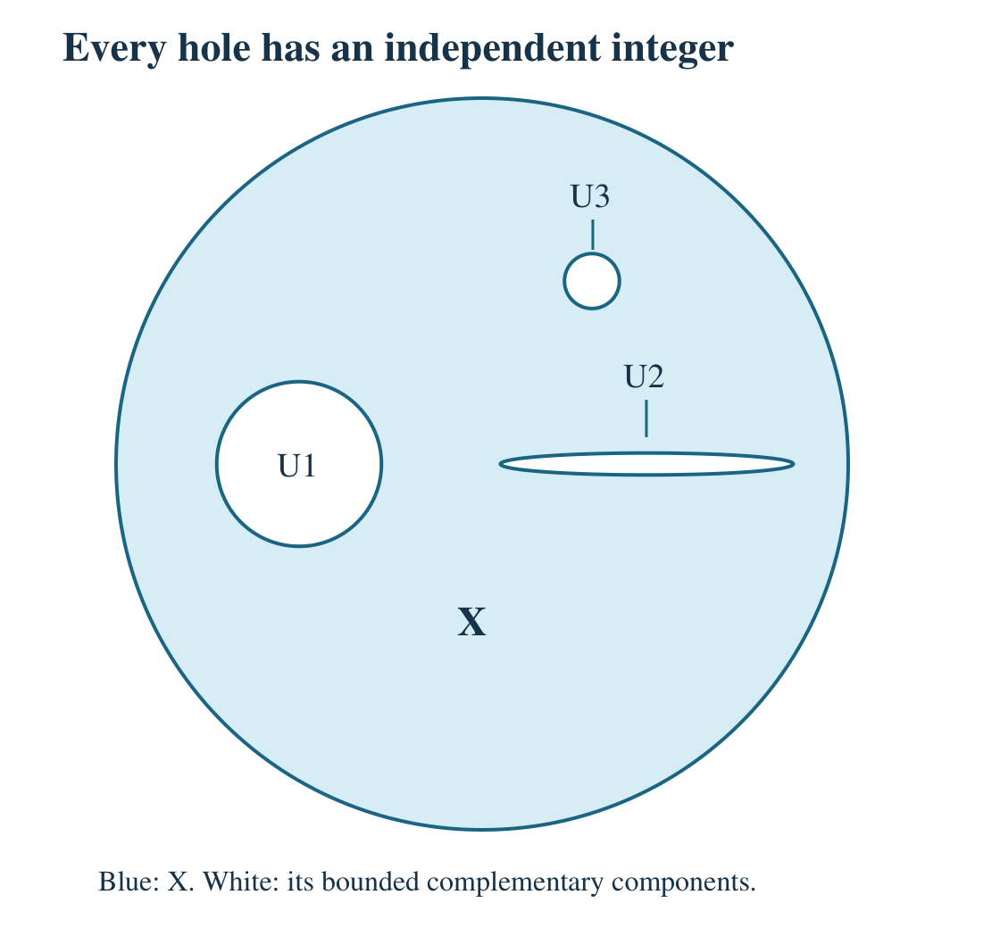

Ext groups, absorption and Brown–Douglas–Fillmore theory
Written by GPT-6.1 Sol (OpenAI). Public domain (CC0).
An extension can be nontrivial for two different reasons. Its quotient relation might have a numerical obstruction to lifting, as the shift does, or the chosen representation might contain extra split summands. Extension groups retain the first kind of information and discard the second. This is why adding extensions is followed by a stabilization relation.
We begin with arbitrary C*-algebras \(A\) and \(B\). Separability of \(A\) enters the construction of inverses. Section 2 proves the strict Hilbert-module Stinespring construction, including its adjointability and minimality assertions. Section 3 proves the equivalence of tensor nuclearity with finite-matrix approximation, and completely positive lifting with arbitrary target algebra and ideal. The precise outstanding dependencies in the planar classification assertions are stated where they arise.
Throughout, \(J=B\otimes\mathcal K\), \(M=M(J)\), \(Q=M/J\), and \(q:M\to Q\) is the quotient map. Tensor products here are spatial. All inner products are conjugate linear in the first variable and linear in the second, including the scalar inner products in Section 6. For \(B=\mathbb C\) these are the compact operators, bounded operators, and Calkin algebra on an infinite-dimensional separable Hilbert space.
1. Adding quotient relations
Choose isometries \(s_1,s_2\in M\) satisfying
\[ s_i^*s_j=\delta_{ij}1,\qquad s_1s_1^*+s_2s_2^*=1. \]They exist without a countability assumption on \(B\): on \(\ell^2(\mathbb N_0)\), send the \(n\)-th basis vector to the \(2n\)-th or the \(2n+1\)-st basis vector, and tensor the resulting operators with the multiplier identity of \(B\). These operators act adjointably on the standard module \(H_B=\ell^2(\mathbb N_0,B)\), whose compact algebra is \(B\otimes\mathcal K\). The identification \(\mathcal L(H_B)=M(B\otimes\mathcal K)\) is proved in Compact operators, multipliers and the strict topology, Theorem 4.1 and Exercise 3. Those results allow arbitrary coefficient algebras.
For Busby maps \(\tau_1,\tau_2:A\to Q\), define
\[ (\tau_1\oplus\tau_2)(a) =q(s_1)\tau_1(a)q(s_1)^*+q(s_2)\tau_2(a)q(s_2)^*. \]Orthogonality makes this a homomorphism. For instance, the cross terms in the product of the expressions for \(a\) and \(b\) vanish, while the diagonal terms give \(\tau_i(ab)\).
Proposition 1.1. Addition of strong equivalence classes
Addition is independent of the chosen isometries up to strong unitary equivalence. It is associative and commutative on strong equivalence classes. Split extensions are closed under addition.
Proof. If \(t_1,t_2\) are another pair, set
\[ U=t_1s_1^*+t_2s_2^*. \]Then \(U^*U=UU^*=1\) and \(Us_i=t_i\). Conjugation by \(q(U)\) identifies the two sums. If \(\tau_i'=\operatorname{Ad}(q(U_i))\tau_i\), the multiplier unitary
\[ W=s_1U_1s_1^*+s_2U_2s_2^* \]conjugates the sum of the \(\tau_i\) to the sum of the \(\tau_i'\). Thus addition is also independent of the strong representatives.
The multiplier unitary \(s_1s_2^*+s_2s_1^*\) exchanges the two summands. For associativity, the two parenthesizations use the three-isometry families
\[ (s_1s_1,s_1s_2,s_2),\qquad(s_1,s_2s_1,s_2s_2). \]Within each family, the range projections are orthogonal and sum to one. The sum \(\sum_{i=1}^3t_i r_i^*\) is consequently a unitary intertwining the two families. It conjugates the two parenthesized Busby maps.
Finally, if \(L_i:A\to M\) are homomorphic lifts, then \(a\mapsto s_1L_1(a)s_1^*+s_2L_2(a)s_2^*\) is a homomorphic lift of the sum. \(\square\)
Write \(\mathscr E(A,B)\) for this commutative semigroup. It need not have an identity represented by the zero Busby map: putting a relation into a proper corner can change its strong equivalence class. The next quotient is therefore an actual part of the definition.
Two maps are stably strongly equivalent if there are split Busby maps \(\sigma_1,\sigma_2\) such that
\[ \tau_1\oplus\sigma_1\sim_s\tau_2\oplus\sigma_2. \]We define \(\operatorname{Ext}(A,B)\) to be the quotient by this relation. We also write \(\operatorname{Ext}(A)=\operatorname{Ext}(A,\mathbb C)\).
Proposition 1.2. The stabilized semigroup has zero
Stable strong equivalence is an equivalence relation compatible with addition. Its quotient is an abelian monoid. All split maps represent its zero element, and the class of \(\tau\oplus0\) equals the class of \(\tau\).
Proof. Reflexivity follows by adding a zero map to both sides. Symmetry is immediate. For transitivity, add the split summands in the two given equivalences and use associativity and commutativity. For example, if \(x+t_1=y+t_2\) and \(y+t_3=z+t_4\) in \(\mathscr E(A,B)\), then
\[ x+(t_1+t_3)=z+(t_4+t_2). \]The new summands are split. Adding another extension to a stable equivalence preserves it; hence addition descends.
For a split class \(t\), commutativity gives \(t+0=0+t\), so \(t\) and \(0\) become equivalent. For any \(x\), associativity gives
\[ (x+0)+0=x+(0+0). \]Since both \(0\) and \(0+0\) are split, \(x+0\) and \(x\) become equivalent. The common class of split extensions is therefore an identity. \(\square\)
The distinction between strong equivalence and stable strong equivalence prevents a common mistake: a unital Busby map need not be strongly equivalent to its sum with the zero map. Their images of \(1\) have different support projections. They do represent the same element of \(\operatorname{Ext}\).
Proposition 1.3. Corona conjugacies after stabilization
Using weak unitary equivalence instead of strong unitary equivalence gives the same ordinary \(\operatorname{Ext}(A,B)\).
Proof. Suppose \(\tau_2=\operatorname{Ad}(v)\tau_1\) for a unitary \(v\in Q\). The unitary \(\operatorname{diag}(v,v^*)\in M_2(Q)\) lifts to a multiplier unitary. To prove this lifting assertion, the path
\[ \operatorname{diag}(v,1)R_t\operatorname{diag}(1,v^*)R_t^*, \qquad R_t=\begin{pmatrix}\cos t&-\sin t\\\sin t&\cos t\end{pmatrix}, \quad0\leq t\leq\pi/2, \]runs from \(\operatorname{diag}(v,v^*)\) to \(1\). Every unitary connected to \(1\) in a quotient lifts to a unitary: partition a path from \(1\) into finitely many increments sufficiently close to \(1\) to have a continuous self-adjoint logarithm. Lift each logarithm self-adjointly and multiply its exponential by the previous lift. This gives exactly the endpoint unitary, with no limiting approximation needed.
Conjugation by the resulting lift takes \(\operatorname{diag}(\tau_1,0)\) to \(\operatorname{diag}(\tau_2,0)\). Thus adding the split zero extension changes a weak equivalence into a strong one. Apply this to the weak equivalence witnessing any stable relation, and use Proposition 1.2 to discard the extra zero maps. The converse is immediate. \(\square\)
The proof uses zero summands. It does not assert the analogous equality for a stabilization relation that requires every added extension to have a unital lift.
2. Why a completely positive lift produces an inverse
A completely positive lift can be placed in a corner of a homomorphism. The other corner will be the inverse. We first make the needed stabilization precise, including the case in which \(B\) is not \(\sigma\)-unital.
Recall that \(\mathcal L(E,F)\) denotes the adjointable maps between Hilbert \(B\)-modules. A unitary between modules is a surjective \(B\)-linear inner-product-preserving map; its inverse is its adjoint.
Lemma 2.0a. The strict KSGNS construction
Let \(C,B\) be arbitrary C*-algebras, let \(H\) be a Hilbert \(B\)-module, and let \(\psi:C\to\mathcal L(H)\) be completely positive. Suppose a positive contractive approximate identity \((e_\lambda)\) satisfies \(\psi(e_\lambda)\to h\) strictly. Then there are a Hilbert \(B\)-module \(E\), a nondegenerate homomorphism \(\pi:C\to\mathcal L(E)\), and an adjointable map \(V:H\to E\), with
\[ \psi(c)=V^*\pi(c)V,\qquad V^*V=h,\qquad E=\overline{\operatorname{span}}\pi(C)VH. \]This dilation is unique up to a unitary intertwining \(\pi\) and \(V\). Moreover \(\|V\|^2=\|\psi\|\). If \(h=1\), the range of \(V\) is complemented. No separability or \(\sigma\)-unitality assumption is required.
Proof. Complete positivity implies positivity and boundedness; the boundedness assertion is proved in Completely positive maps, Proposition 3.2. On \(C\odot H\), define
\[ \left\langle\sum_i c_i\otimes x_i,\sum_j d_j\otimes y_j\right\rangle =\sum_{i,j}\langle x_i,\psi(c_i^*d_j)y_j\rangle_B. \]The matrix \([c_i^*c_j]\) is positive, being a row's Gram matrix. Its image \([\psi(c_i^*c_j)]\) is positive in \(\mathcal L(H^n)\); its quadratic form on the column \((x_i)\) is the displayed squared length. Thus the form is positive semidefinite. The module Cauchy–Schwarz inequality makes its null vectors orthogonal to every vector and its null space a right submodule. Quotient and complete to obtain \(E\). These operations, including the coefficient-order Cauchy–Schwarz inequality and the semidefinite quotient and completion, are proved in Ordinary Hilbert C*-module foundations, MF.2–MF.3.
Left multiplication gives \(\pi(c)[d\otimes x]=[cd\otimes x]\). For \(z=\sum_i d_i\otimes x_i\), positivity of
\[ [d_i^*(\|c\|^2 1-c^*c)d_j] \]in the unitization, followed by complete positivity, gives \(\langle\pi(c)z,\pi(c)z\rangle\leq\|c\|^2\langle z,z\rangle\). Consequently left multiplication preserves null vectors and extends boundedly. Its adjoint is left multiplication by \(c^*\), directly from the form. It is multiplicative. Also \(\pi(e_\lambda)[d\otimes x]\to[d\otimes x]\), since \(e_\lambda d\to d\). The bound \(\|[d\otimes x]\|\leq\|\psi\|^{1/2}\|d\|\|x\|\) extends this convergence to all of \(E\), proving nondegeneracy.
It remains to construct an adjointable \(V\); an arbitrary bounded module map would not suffice. Strict convergence here means convergence of \(\psi(e_\lambda)x\) and its adjoint action on every \(x\in H\). This characterization on bounded sets is Compact operators, multipliers and the strict topology, Proposition 5.1.
For every positive contraction \(c\in C\), \(0\leq e_\lambda c e_\lambda\leq e_\lambda^2\leq e_\lambda\). Take quadratic forms, apply \(\psi\), and pass to the norm limit on each vector. It follows that \(h\geq\psi(c)\geq0\). The quadratic-form test for positivity is proved in Ordinary Hilbert C*-module foundations, MF.5, equation (MF.14).
The map \(\Psi:C^+\to\mathcal L(H)\), \(\Psi(c+t1)=\psi(c)+th\), is positive. Indeed, positivity of \(c+t1\) implies \(t\geq0\), \(c=c^*\), and \(\|c_-\|\leq t\). For \(t>0\), the preceding order bound gives \(\psi(c_-)\leq th\); hence \(\Psi(c+t1)=\psi(c_+)+th-\psi(c_-)\geq0\). The case \(t=0\) is immediate. Only positivity, rather than complete positivity, of this auxiliary map is needed.
Put \(p=1-e_\lambda\) and \(r=1-e_\mu\). Both are positive contractions. Without assuming that they commute,
\[ (e_\lambda-e_\mu)^2=(p-r)^2 \leq2(p^2+r^2)\leq2(p+r). \]Applying \(\Psi\) gives
\[ \|[e_\lambda\otimes x]-[e_\mu\otimes x]\|^2 \leq2\|\langle x,(2h-\psi(e_\lambda)-\psi(e_\mu))x\rangle\| \longrightarrow0. \]Thus \(Vx=\lim_\lambda[e_\lambda\otimes x]\) exists, is \(B\)-linear, and has norm at most \(\|\psi\|^{1/2}\). For a finite tensor sum \(z=\sum_i[c_i\otimes y_i]\),
\[ \langle Vx,z\rangle=\left\langle x,\sum_i\psi(c_i)y_i\right\rangle. \]For any module vector \(w\), \(\|w\|=\sup_{\|x\|\leq1}\|\langle x,w\rangle\|\): Cauchy–Schwarz proves the upper bound, and \(x=w/\|w\|\) proves the reverse bound. The preceding equality therefore makes \(z\mapsto\sum_i\psi(c_i)y_i\) well defined on the null quotient and bounded by \(\|V\|\|z\|\). Its extension is exactly \(V^*\). This proves adjointability, including convergence of the adjoint formula.
Now \(\pi(c)Vx=[c\otimes x]\), by \(ce_\lambda\to c\), so \(V^*\pi(c)V=\psi(c)\) and minimality follows. Taking limits in \(V^*[e_\lambda\otimes x]=\psi(e_\lambda)x\) proves \(V^*V=h\). Compression gives \(\|\psi\|\leq\|V\|^2\), while the construction gave the reverse inequality. If \(h=1\), \(VV^*\) is the orthogonal projection onto \(VH\).
For another minimal dilation \((E',\rho,W)\), send \(\sum_i\pi(c_i)Vx_i\) to \(\sum_i\rho(c_i)Wx_i\). The squared lengths and mixed inner products coincide by the kernel formula. The map extends to a surjective inner-product-preserving map, hence a unitary. It intertwines the representations. Nondegeneracy of both representations and passage to the approximate-identity limit show that it sends \(V\) to \(W\); density proves uniqueness. Finally every other positive contractive approximate identity \((f_\nu)\) satisfies \(\pi(f_\nu)\to1\) pointwise on \(E\), so \(\psi(f_\nu)=V^*\pi(f_\nu)V\to V^*V\) strictly. This also verifies independence of the approximate identity in the definition of strictness. \(\square\)
Lemma 2.0b. The ordinary tensor foundations
For arbitrary C*-algebras \(C,D\), the spatial tensor norm is independent of the faithful Hilbert-space representations used to define it. It preserves inclusions, and is the smallest C*-norm on \(C\odot D\). Every C*-norm \(\gamma\) on that algebra satisfies \[ \|z\|_{\min}\leq\gamma(z)\leq\|z\|_{\max},\qquad \gamma(c\otimes d)=\|c\|\|d\|. \] There is a unique C*-norm on \(M_n\odot D=M_n(D)\). Tensoring homomorphisms is contractive for the minimal norm; the flip and rebracketing are isometric. None of these assertions assumes separability, units or nuclearity.
Proof: construction and independence. On the algebraic Hilbert-space tensor product use the product inner product, linear in its second variable. A finite sum can be written \(\sum_j e_j\otimes\eta_j\) with the \(e_j\) orthonormal, and its squared norm is \(\sum_j\|\eta_j\|^2\); this proves positive definiteness. Completion gives \(H\otimes K\). Expansion in orthonormal bases of the finite spans of the entries proves that \(T\otimes1\) and \(1\otimes S\) have norms at most \(\|T\|\) and \(\|S\|\). Their product has adjoint \(T^*\otimes S^*\), and product unit vectors approaching both operator norms prove \(\|T\otimes S\|=\|T\|\|S\|\). Flip and rebracketing preserve the inner products and extend to unitaries.
We spell out the representation facts used here. For a nonzero positive \(x\) in a unital C*-algebra, evaluation at \(\|x\|\) on \(C^*(1,x)\), followed by norm-preserving Hahn–Banach extension, gives a functional \(f\) with \(\|f\|=f(1)=1\) and \(f(x)=\|x\|\). This functional is positive. Indeed, the first-order expansion of \(f(e^{ith})\) and \(|f(e^{ith})|\leq1\), for both signs of real \(t\), makes \(f(h)\) real for self-adjoint \(h\). For \(0\leq h\leq1\), \(|1-f(h)|\leq\|1-h\|\leq1\) then gives \(f(h)\geq0\). Scaling proves positivity. The same argument shows that every norm-preserving extension of a state from a unital subalgebra is a state.
For a state \(f\), the form \(f(x^*y)\) is positive semidefinite. Applying positivity to \((x+ty)^*(x+ty)\) for complex \(t\) gives Cauchy–Schwarz, so null vectors are orthogonal to everything. In the quotient and its completion, left multiplication by \(a\) is bounded because \[ f(x^*a^*ax)\leq\|a\|^2 f(x^*x), \] and has adjoint left multiplication by \(a^*\). The class of \(1\) is cyclic. The direct sum over states is faithful, by the norm-attaining states just constructed. For a nonunital algebra use its unitization and restrict to the nondegenerate part; the restriction remains faithful. We use the earlier functional calculus, positive-square-root and adjointable-operator proofs specified in the internal dependency paragraph, rather than an additional representation theorem.
Define \[ \|z\|_{\min}=\sup_{\pi,\rho}\|(\pi\odot\rho)(z)\|, \qquad z\in C\odot D, \] over Hilbert-space representations. This is finite, since for \(z=\sum_i c_i\otimes d_i\) it is at most \(\sum_i\|c_i\|\|d_i\|\). It is submultiplicative, respects adjoints, and \(\|z^*z\|_{\min}=\sup_{\pi,\rho}\|(\pi\odot\rho)(z)\|^2=\|z\|_{\min}^2\). For a faithful pair its product representation is algebraically injective: vector functionals separate operators, hence their restrictions span the dual of every finite-dimensional operator subspace. Applying products of these functionals to a zero image recovers all algebraic tensor coefficients. Thus the supremum is a norm.
Fix faithful nondegenerate representations \(\pi,\rho\). In the unital case they are unital. The convex hull of unit vector states of a faithful representation is weak-* dense in the state space: a separating continuous real functional would be evaluation at a self-adjoint \(h\), and would give a state \(f\) with \[ f(h)>\sup_{\|\xi\|=1}\langle\xi,\pi(h)\xi\rangle. \] Faithfulness preserves spectrum and order, so the supremum on the right is the maximal spectral value of \(h\), which bounds every state's value. This is a contradiction. Continuous real weak-* functionals are finite combinations of evaluations, justifying the asserted form of the separator.
Put \(r=\|(\pi\odot\rho)(z)\|\). For every \(w\in C\odot D\), the represented operator inequality gives \[ (f_\xi\otimes g_\eta)(w^*z^*zw) \leq r^2(f_\xi\otimes g_\eta)(w^*w). \] Convex combinations and weak-* approximation extend this to every pair of states \(f,g\), since each expression is a finite sum of products of evaluations. In their product GNS representation the vectors \(w(\xi_f\otimes\xi_g)\) are dense, and this inequality bounds the represented \(z\) by \(r\). Every nondegenerate representation is a direct sum of cyclic representations: take a maximal orthogonal family of cyclic reducing subspaces; a nonzero reducing complement would supply another one. Each cyclic representation is its vector state's GNS representation, by the map \([a]\mapsto\pi(a)\xi\). Tensor products of these orthogonal sums are the corresponding sums of cyclic product representations. Hence every pair has norm at most \(r\), proving independence.
For nonunital factors, a faithful nondegenerate representation extends faithfully to the usual unitization: \(\pi(c)+\lambda I=0\), with \(\lambda\ne0\), would make \(-c/\lambda\) an identity of the original algebra. If the algebra already has an identity, retain that identity in this step. Discard zero representation parts before extending other representations. The unital proof then proves independence on the original algebraic tensor product. Composing representations with homomorphisms proves tensor contractivity. Restricting faithful representations of larger algebras to the nondegenerate parts of subalgebras preserves faithfulness, and proves tensor inclusions isometric. The Hilbert-space flip and rebracketing give the remaining isometries.
Proof: the smallest norm for unital factors. We first justify the pure-state argument completely. The state space is a weak-* compact convex subset of the dual unit ball: it is closed, by its defining positivity and identity conditions, and compact by Banach–Alaoglu. For positive \(x\), the states taking the maximal value \(\|x\|\) form a nonempty compact face. A decreasing chain of nonempty compact faces has nonempty intersection. Zorn's lemma gives a minimal such face. If it contained two distinct states, a self-adjoint element separating them would have a proper nonempty maximizing face inside it, a contradiction. The minimal face is a singleton, hence a pure state. Pure states therefore norm positive elements, and the direct sum of their GNS representations is faithful.
If \(f\) is pure and \(0\leq\ell\leq f\), write \(t=\ell(1)\). For \(0<t<1\), the expression \(f=t(\ell/t)+(1-t)((f-\ell)/(1-t))\) and extremality give \(\ell=tf\); the cases \(t=0,1\) follow from positivity and its norm formula. In the GNS representation of \(f\), a positive contraction \(T\) in the commutant defines \(\ell(a)=\langle\xi,T\pi(a)\xi\rangle\) with \(0\leq\ell\leq f\). The equality \(\ell=tf\), tested on all \(a\), implies \(T\xi=t\xi\), and then cyclicity and commutation give \(T=tI\). Every commutant operator is a complex linear combination of positive contractions, so the commutant consists of scalars.
Let \(\gamma\) be a C*-norm on \(C\odot D\), with both factors unital. The maps \(c\mapsto c\otimes1\) and \(d\mapsto1\otimes d\) into the completion are injective C*-homomorphisms, hence isometric; their ranges commute. If \(D=C(X)\) is commutative, every pure-state GNS representation of the completion sends this central subalgebra to scalars, by the preceding commutant argument. Its character is evaluation at a point of \(X\). For \(z=\sum_i c_i\otimes d_i\), its represented norm is therefore at most \(\sup_{x\in X}\|\sum_i d_i(x)c_i\|\). The pure representations are faithful, while faithful representations of \(C\) and the sum of all point evaluations of \(C(X)\) identify this last supremum with \(\|z\|_{\min}\). Thus \(\gamma\leq\|\cdot\|_{\min}\). To prove the reverse inequality, we first recover the cross-norm bound directly from algebraic injectivity.
Explicitly, fix \(x\in X\) and set \(h(y)=\max(0,1-\|z(y)-z(x)\|/\varepsilon)\). This is a positive continuous function with \(h(x)=\|h\|=1\), supported where \(\|z(y)-z(x)\|\leq\varepsilon\). The upper estimate just proved gives \(\gamma(z(1\otimes h)-z(x)\otimes h)\leq\varepsilon\). Furthermore \(\gamma(c\otimes h)=\|c\|\|h\|\): commuting positive elements \(c^*c\otimes1\) and \(1\otimes h^2\) generate a commutative C*-algebra, and their joint spectrum projects onto both spectra; if its supremum product were less than \(\|c\|^2\|h\|^2\), choose nonzero continuous functions of each supported close to their positive maxima. Their product would vanish, contradicting the injectivity of the algebraic tensor map. Their product supremum is consequently the product of the maxima. The C*-identity gives the assertion. Since \(\gamma(1\otimes h)=1\), \(\gamma(z)\geq\|z(x)\|-\varepsilon\). Let \(\varepsilon\downarrow0\), then take the supremum over \(x\). The norm is therefore unique when a factor is commutative. The same joint-spectrum argument proves the cross-norm identity for any unital factors and any \(\gamma\), since only one self-adjoint element in each factor was used.
Now fix a pure state \(f\) of \(C\), and let \(E_\gamma=C\otimes_\gamma D\). States on \(E_\gamma\) restricting to \(f\) on \(C\otimes1\) exist by the state extension above. For such a state \(\Omega\) and \(0\leq d\leq1\), the functional \(c\mapsto\Omega(c\otimes d)\) lies between \(0\) and \(f\); purity proves \[ \Omega(c\otimes d)=f(c)g(d),\qquad g(d)=\Omega(1\otimes d). \] Linear decomposition into positive elements gives \(\Omega=f\otimes g\) on all elementary tensors. The set \(G\) of possible \(g\)'s is nonempty, compact and convex. For every self-adjoint \(d\in D\) and every state \(g_0\) of \(D\), the product state \(f\otimes(g_0|_{C^*(1,d)})\) is continuous on \(C\otimes_\gamma C^*(1,d)\), by the commutative-factor result. Extend it to \(E_\gamma\). The preceding factorization gives a member \(g\in G\) with \(g(d)=g_0(d)\). If \(g_0\notin G\), real weak-* Hahn–Banach separation would give a self-adjoint \(d\) whose value at \(g_0\) exceeds all values on \(G\), contradicting this property. Thus \(G\) is the whole state space of \(D\).
Every product \(f\otimes g\), with \(f\) pure and \(g\) arbitrary, consequently extends to a state of \(E_\gamma\). Its GNS representation is the product GNS representation: the map \([c\otimes d]\mapsto[c]\otimes[d]\) preserves inner products and has dense range. The direct sums over pure states of \(C\) and states of \(D\) are faithful. Independence of faithful spatial representations therefore gives \(\|z\|_{\min}\leq\gamma(z)\).
Proof: arbitrary factors and the largest norm. We must justify the nonunital reduction rather than assume a cross norm. Let \(E_\gamma\) be the completion for an arbitrary \(\gamma\). On its dense algebraic subalgebra, left multiplication in the first factor by \(c\in C\) satisfies \[ \|c\|^2 x^*x-(L_cx)^*(L_cx)=y^*y,\qquad y=L_{(\|c\|^21-c^*c)^{1/2}}x . \] The coefficients of \(y\) lie in \(C\), even though the square root is formed in its unitization. Positivity in \(E_\gamma\) gives \(\|L_cx\|\leq\|c\|\|x\|\). For the standard Hilbert module \((E_\gamma)_{E_\gamma}\), \(L_c\) has adjoint \(L_{c^*}\). The same holds for \(L_d\) in the second factor. These commuting homomorphisms into \(\mathcal L(E_\gamma)\) satisfy \(L_cL_d=\ell_{c\otimes d}\), where \(\ell\) is left multiplication by an element of \(E_\gamma\). The map \(\ell:E_\gamma\to\mathcal L(E_\gamma)\) is isometric: contractivity follows from multiplication, and \(xe_\lambda\to x\) for a contractive approximate identity proves the reverse bound. A faithful representation of \(\mathcal L(E_\gamma)\) therefore realizes \(\gamma\) by commuting representations of \(C,D\).
Extend these two representations to the forced unitizations \(C^+,D^+\), using \(c+\lambda1\mapsto L_c+\lambda I\). Their product representation need not be faithful on the enlarged algebraic tensor product. Add the product representations of a faithful representation of \(C^+\) with the scalar quotient of \(D^+\), of the scalar quotient of \(C^+\) with a faithful representation of \(D^+\), and of the two scalar quotients. The resulting direct sum is algebraically faithful: in \[ z=x+c\otimes1+1\otimes d+\lambda1\otimes1 \] the last three summands successively force \(\lambda=0,c=0,d=0\); the original faithful representation then forces \(x=0\). Its operator norm is a C*-norm \(\gamma^+\) restricting to \(\gamma\) on \(C\odot D\), because the added quotient representations vanish there. The unital minimality result applied to \(\gamma^+\), and the already proved isometric spatial inclusions, gives \(\|z\|_{\min}\leq\gamma(z)\) for arbitrary factors. The unital cross-norm identity restricts to the same identity for \(\gamma\).
The supremum over all commuting representations of the factors is finite, bounded by \(\sum_i\|c_i\|\|d_i\|\), and is a C*-norm: product representations are among them, so it is nondegenerate, and the C*-identity follows as for the minimal norm. This defines \(\|\cdot\|_{\max}\). The realization of each \(\gamma\) by commuting representations just proved gives \(\gamma\leq\|\cdot\|_{\max}\). Its completion has the stated universal property because every such represented algebraic map is bounded by that supremum.
Finally \(M_n\odot D\) is the full algebra \(M_n(D)\), not merely a dense subalgebra. In a faithful representation of \(D\), its matrix norm satisfies \(\max_{ij}\|d_{ij}\|\leq\|[d_{ij}]\|\leq\sum_{ij}\|d_{ij}\|\). Thus it is complete by entrywise convergence, and its operations and C*-identity follow from its represented matrices. For any other C*-norm \(\gamma\), the algebraic identity from this complete C*-algebra into the \(\gamma\)-completion is an injective homomorphism of C*-algebras; it is automatically isometric. This proves uniqueness and its agreement with both tensor norms. Zero factors give only the zero algebra and require no state argument. \(\square\)
Lemma 2.1. Stabilization from countably many operator ranges
Suppose \(E\) is a Hilbert \(B\)-module and there are contractions \(R_j\in\mathcal L(H_B,E)\) such that the span of their ranges is dense in \(E\). Then \(E\oplus H_B\cong H_B\). No \(\sigma\)-unitality assumption on \(B\) is required.
Proof. Repeat the sequence \(R_j\) so that every original operator occurs arbitrarily far along the sequence. Put \(X=\bigoplus_{j\geq1}H_B\), which is canonically unitarily isomorphic to \(H_B\) by a bijection of the two countable coordinate sets. Define
\[ T:X\longrightarrow E\oplus X,\qquad T((x_j))=\left(\sum_j2^{-j}R_jx_j,(4^{-j}x_j)_j\right). \]The first coordinate converges in norm. The column of adjoints \((2^{-j}R_j^*y)_j\) defines an adjointable map, because its squared coefficient norms have a summable bound. Explicitly,
\[ T^*(y,(z_j))=(2^{-j}R_j^*y+4^{-j}z_j)_j. \]The range of \(T^*\) contains every finite-support vector of \(X\): for such a vector \(w\), take \(y=0\) and \(z_j=4^jw_j\). Thus its range is dense.
The range of \(T\) is also dense. To approximate \((y,0)\), first approximate \(y\) by a finite sum of vectors \(R_i u_i\). Place each \(u_i\) in an arbitrarily late repeated copy \(j_i\) of \(R_i\), with input \(x_{j_i}=2^{j_i}u_i\). The first coordinate is the chosen sum, whereas the norm of the second coordinate is bounded by \(\sum_i2^{-j_i}\|u_i\|\), which can be made arbitrarily small. To approximate a general \((y,z)\), approximate \(z\) by a finite-support vector \(z^0\), realize that second coordinate with \(x_j=4^jz_j^0\), and correct the resulting first coordinate by the preceding construction at later indices. This proves density.
We include the polar-decomposition step because Hilbert modules do not admit arbitrary polar decompositions. For any adjointable map \(T:X\to Y\),
\[ \overline{\operatorname{ran}(T^*T)} =\overline{\operatorname{ran}(T^*)}. \]One inclusion is immediate. For the other, write \(h=T^*T\). For \(v\in Y\),
\[ \|\varepsilon(h+\varepsilon)^{-1}T^*v\| \leq \frac{\sqrt\varepsilon}{2}\|v\|, \]because the square of the operator norm on the left is bounded by \(\sup_{t\geq0}\varepsilon^2t/(t+\varepsilon)^2=\varepsilon/4\). Therefore \(h(h+\varepsilon)^{-1}T^*v\to T^*v\), and the approximants lie in \(\operatorname{ran}h\). In our case \(\operatorname{ran}h\) is dense, and hence so is \(\operatorname{ran}|T|\).
The rule \(U(|T|x)=Tx\) is well defined and preserves inner products, since \(T^*T=|T|^2\). It extends from the dense range of \(|T|\) to an isometry \(X\to E\oplus X\). Its range is closed and contains the dense range of \(T\), so it is surjective. It is the required unitary. Replacing \(X\) by \(H_B\) proves the lemma. \(\square\)
The ordinary stabilization theorem assumes that the module is countably generated by vectors. Here the generators are adjointable maps from \(H_B\). This is the form needed for the dilation of a map into \(\mathcal L(H_B)\) when \(H_B\) itself is not countably generated.
Lemma 2.2. A corner dilation
Let \(A\) be separable and \(B\) arbitrary. Every completely positive contraction \(L:A\to M(B\otimes\mathcal K)\) is the upper-left corner of a homomorphism
\[ \Phi:A\longrightarrow M_2(M(B\otimes\mathcal K)). \]Proof. Adjoin a unit to \(A\), even if it already has one, and extend \(L\) by
\[ \widehat L(a+\lambda1)=L(a)+\lambda1. \]This is a unital completely positive map. In a faithful Hilbert-space representation of the target, Completely positive maps, Theorem 6.1 writes \(L(a)=V^*\pi(a)V\), with \(V^*V\leq1\). Extending \(\pi\) to a unital representation of the adjoined-unit algebra gives
\[ \widehat L(x)=V^*\widehat\pi(x)V +\lambda(x)(1-V^*V), \]where \(\lambda:A^+\to\mathbb C\) is the scalar quotient. Both summands are completely positive, which proves the assertion at every matrix level.
Apply Lemma 2.0a to \(\widehat L:A^+\to\mathcal L(H_B)\). Unitality makes this map strict and gives \(V^*V=1\). The minimality and adjointability required below have just been proved for arbitrary coefficient algebra and arbitrary Hilbert module. The tensor construction can also be compared with [Blackadar, free revised Operator Algebras, II.7.5.2] and the dilation exercise in [Blackadar, free corrected K-Theory, 13.7.2]. The operator-range stabilization in Lemma 2.1 is what removes a \(\sigma\)-unitality restriction from the corner argument here.
The projection \(VV^*\) splits \(E=VH_B\oplus F\). Choose a dense sequence \(a_j\) in the unit ball of \(A^+\). The adjointable maps
\[ R_j=(1-VV^*)\pi(a_j)V:H_B\longrightarrow F \]have dense joint span by minimality. Lemma 2.1 gives \(F\oplus H_B\cong H_B\). Consequently
\[ E\oplus H_B =VH_B\oplus(F\oplus H_B) \cong H_B\oplus H_B, \]with \(V\oplus0\) identified with the inclusion of the first summand. Transport \(\pi|_A\oplus0\) through this unitary. Its upper-left corner is \(V^*\pi(a)V=L(a)\). This is \(\Phi\). \(\square\)
Theorem 2.3. Invertibility is semisplitting
If \(A\) is separable, an extension of \(A\) by \(B\otimes\mathcal K\) represents an invertible element of \(\operatorname{Ext}(A,B)\) if and only if its Busby map has a completely positive contractive lift. The coefficient algebra \(B\) may be arbitrary.
Proof. Suppose first that \(\tau=qL\), where \(L\) is a completely positive contraction. Use Lemma 2.2 and write the homomorphic dilation as \([\Phi_{ij}]\). From multiplicativity,
\[ \Phi_{11}(a^*a)-\Phi_{11}(a)^*\Phi_{11}(a) =\Phi_{21}(a)^*\Phi_{21}(a). \]The image of the left side in \(Q\) is zero, because \(q\Phi_{11}=\tau\) is a homomorphism. Hence \(q\Phi_{21}(a)=0\), and \(\Phi_{21}(a)\in J\). Applying this to \(a^*\) also gives \(\Phi_{12}(a)\in J\). The lower-right multiplicative equation therefore implies that
\[ \tau'(a)=q(\Phi_{22}(a)) \]is a homomorphism. The quotient of \(\Phi\) is exactly \(\operatorname{diag}(\tau,\tau')\). Identifying \(M_2(M)\) with \(M\) by the fixed isometries shows that \(\tau\oplus\tau'\) is split. Thus \([\tau']=-[\tau]\).
Conversely, suppose \([\tau]+[\rho]=0\). By the definition of the stabilization relation, there are split maps \(\sigma_1,\sigma_2\) such that \(\tau\oplus\rho\oplus\sigma_1\) is strongly equivalent to \(0\oplus\sigma_2\). The latter has a homomorphic lift. Conjugate that lift by the implementing multiplier unitary, and compress it to the corner carrying \(\tau\). Compression of a homomorphism by an isometry is completely positive and contractive, and its quotient is \(\tau\). The extension is semisplit by the lifting criterion of the preceding lesson. \(\square\)
This argument also explains the word “inverse.” The inverse is the complementary corner of an honest representation. The off-diagonal entries vanish modulo the ideal because the multiplicative defect of the first corner vanishes there. No inverse homomorphism \(A\to Q\) is obtained by putting a minus sign in front of \(\tau\).
The unital extension semigroup
For separable nonzero unital \(A\), write \(\operatorname{Ext}_s^u(A,B)\) for the quotient of the unital Busby maps by strong equivalence and addition of maps with unital homomorphic lifts. Such lifts exist: take a unital representation on a separable Hilbert space, amplify it infinitely, and tensor with \(1_{M(B)}\). The class of any of these split maps is the identity, by the same associativity argument as in Proposition 1.2.
The invertibility criterion is unchanged: a unital Busby map is invertible in this semigroup exactly when it has a completely positive contractive lift. Here is the unitality check that supplements Theorem 2.3. Given such a lift \(L\), choose a state \(\omega\) of \(A\), and set
\[ L'(a)=L(a)+\omega(a)(1-L(1)). \]The correction is completely positive and has values in \(J\), since \(L(1)\leq1\) and \(qL(1)=1\). Thus \(L'\) is a unital completely positive lift. Apply KSGNS directly to this unital map. In the stabilization step of Lemma 2.2, add a unital representation on the extra \(H_B\) instead of the zero representation. The transported dilation \(\Phi\) is then unital. Its complementary quotient corner is also unital, and \(\tau\oplus\tau'\) has the unital lift \(\Phi\), giving an inverse in \(\operatorname{Ext}_s^u\).
Conversely an inverse gives a stable equality with unital split summands. Compress a unital homomorphic lift of the split side, after the implementing conjugation. Its first corner is a unital completely positive lift of \(\tau\), as in Theorem 2.3. In particular, separable nuclear \(A\) also has an abelian group \(\operatorname{Ext}_s^u(A,B)\).
3. Nuclearity makes every extension invertible
We use the finite-matrix formulation of nuclearity: for every finite \(F\subset A\) and \(\varepsilon>0\), there are completely positive contractions
\[ A\overset{\alpha}{\longrightarrow}M_n(\mathbb C) \overset{\beta}{\longrightarrow}A, \qquad \|\beta\alpha(a)-a\|<\varepsilon\quad(a\in F). \tag{3.0} \]Theorem 3.0 proves the equivalence of (3.0) with uniqueness of the C*-tensor norm for arbitrary algebras. Lemmas 3.0a–e then prove the complete lifting argument, with arbitrary target algebras and ideals. The finite-dimensional proof below follows the free Han–Paulsen paper, with its tensor-cone, duality and extension facts established here.
Lemma 2.0b proves here the ordinary tensor foundations: faithful-representation independence, inclusions, arbitrary-algebra minimality and cross norms, and uniqueness of the norm on \(M_n\odot D=M_n(D)\). We also use the actual earlier Hilbert-space Stinespring theorem, Theorem 6.1, whose kernel quotient, bounded left action, approximate-identity construction and adjoint formula are written in that lesson. Scalar GNS and faithful representations are proved in Lemma 2.0b. Functional calculus, positive square roots, contractive approximate identities and automatic contractivity of C*-homomorphisms are the earlier foundational C*-algebra results specified in this lesson's internal dependencies. Hahn–Banach extension and separation are proved in the Hahn–Banach lesson, Theorems 2.1–2.2, Corollary 2.3, Theorem 6.3 and Corollary 6.4. The existing weak-topology lesson, Theorems 1.2, 2.3 and 3.1, proves the weak-* dual, Tychonoff and Banach–Alaoglu. The representation of bounded Hilbert-space sesquilinear forms is Hilbert spaces and compact operators, Theorem 3.1 and Corollary 3.2, the exact provider of the completely positive maps lesson's background (B10).
Theorem 3.0. The two nuclearity formulations
For an arbitrary C*-algebra \(A\), the following are equivalent.
- For every C*-algebra \(D\), the algebra \(A\odot D\) has a unique C*-tensor norm, equivalently \(A\otimes_{\min}D=A\otimes_{\max}D\).
- For every finite \(F\subset A\) and every \(\varepsilon>0\), there are an integer \(n\) and completely positive contractions \[ A\xrightarrow{\alpha}M_n\xrightarrow{\beta}A \quad\text{with}\quad \|\beta\alpha(a)-a\|<\varepsilon\quad(a\in F). \tag{N.1} \]
When \(A\ne0\) is unital, in the direction \(1\Rightarrow2\) both maps may be chosen unital. Thus the finite-set formulation is a net formulation for arbitrary \(A\); separability is needed only if one wants a single sequence.
The maximal norm here is the supremum of \(\|\sum_i\pi(a_i)\rho(d_i)\|\) over commuting *-representations \(\pi,\rho\) on one Hilbert space. It is finite, since it is bounded by \(\sum_i\|a_i\|\|d_i\|\), and it is a C*-norm because spatial representations occur among these representations. It dominates every C*-tensor norm. For completeness, represent the completion for any such norm faithfully and nondegenerately. If either factor is nonunital, positive contractive approximate identities define the factor representations by the strong limits of the operators representing \(a\otimes e_\lambda\) and \(f_\mu\otimes d\). The limits exist first on the dense span of vectors obtained from algebraic tensors, where multiplication reduces the assertion to \(e_\lambda d\to d\) and \(f_\mu a\to a\); their uniform cross-norm bounds extend them to the whole space. They commute and their products give the original representation. The preceding minimality theorem then proves the equivalence in item 1.
We first prove the elementary finite-dimensional facts used for \(1\Rightarrow2\).
N.2. Matrix-valued maps and positive functionals
An operator system is a complex self-adjoint linear space \(S\subset B(H)\) containing \(1\), with the positive cones inherited by \(M_k(S)\). A map between such spaces is completely positive when it preserves all these cones. An abstract space with compatible proper matrix cones and an Archimedean matrix order unit will also be realized concretely below; thus this terminology introduces no representation theorem as an unproved dependency.
For a linear map \(f:S\to M_n\), define
\[ F_f([x_{ij}])=\sum_{i,j=1}^n f(x_{ij})_{ij}, \qquad [x_{ij}]\in M_n(S). \tag{N.2} \]Then \(f\) is completely positive if and only if \(F_f\) is positive. If \(f\) is completely positive, apply \(f^{(n)}\) to a positive matrix and evaluate at the vector \(\sum_i e_i\otimes e_i\). Conversely, given \([x_{ij}]\in M_k(S)^+\) and vectors \(v_1,\ldots,v_k\in\mathbb C^n\), put \(C_{ip}=(v_i)_p\). The scalar matrix compression \(C^*[x_{ij}]C\) belongs to \(M_n(S)^+\), and
\[ F_f(C^*[x_{ij}]C) =\sum_{i,j=1}^k\langle v_i,f(x_{ij})v_j\rangle. \]Its nonnegativity proves positivity of \(f^{(k)}([x_{ij}])\) for every \(k\).
Every positive functional \(F\) on an operator subsystem of a unital C*-algebra has a positive extension to the algebra. Here is the required scalar argument. Positivity gives \(F(x^*)=\overline{F(x)}\) and, for any \(x\) in the subsystem, choosing a phase \(t\) gives \[ |F(x)|=\operatorname{Re}F(e^{it}x) \leq \|x\|F(1). \] Indeed, \(\|x\|1-\operatorname{Re}(e^{it}x)\geq0\). Thus \(\|F\|=F(1)\). Extend \(F\) with the same norm by the complex Hahn–Banach theorem. A functional \(G\) on a unital C*-algebra with \(G(1)=\|G\|=c\geq0\) is positive: for self-adjoint \(h\), the estimate \[ |c+itG(h)|\leq c\|1+ith\| \leq c(1+t^2\|h\|^2)^{1/2} \] for both signs of small real \(t\) forces \(G(h)\) to be real. If \(0\leq h\leq1\), then \(|c-G(h)|=|G(1-h)|\leq c\), so \(G(h)\geq0\). Scaling proves positivity on every positive element. The case \(c=0\) gives the zero functional.
Consequently, if \(E\subset A\) is an operator subsystem of a unital C*-algebra, every completely positive \(f:E\to M_n\) extends to a completely positive map \(\widetilde f:A\to M_n\). Apply this positive extension argument to \(F_f\) on \(M_n(E)\subset M_n(A)\), and recover \(\widetilde f\) by (N.2). The entries of \(\widetilde f(1)\) are fixed by the values on the matrices with one entry \(1\), so a unital \(f\) has a unital extension. This proves precisely the matrix-target extension statement that will be needed.
N.3. The finite-dimensional dual system
Let \(E\) be a finite-dimensional operator system. On \(E^*\), set \[ [f_{ij}]\in M_n(E^*)^+ \quad\Longleftrightarrow\quad x\longmapsto[f_{ij}(x)]\text{ is completely positive }E\to M_n. \tag{N.3} \] These are closed proper cones, compatible with direct sums and scalar matrix compressions. The involution is \(f^*(x)=\overline{f(x^*)}\).
There is a state \(\omega\) on \(E\) with \(\omega(x)>0\) for every nonzero \(x\in E^+\). To see this, on the compact set \(\{x\in E^+:\|x\|=1\}\), vector states of a concrete representation give open sets on which their value is positive; a finite subcover and the average of its vector states give such an \(\omega\).
We check that \(\omega\) is an Archimedean matrix order unit for (N.3). For fixed \(n\), the functional \[ \Omega_n([x_{ij}])=\sum_i\omega(x_{ii}) \] is strictly positive on nonzero \(M_n(E)^+\). If it vanishes, every diagonal entry vanishes by faithfulness of \(\omega\), and positivity of a concrete operator matrix then forces every off-diagonal entry to vanish as well: evaluate each two by two compression on vectors and use scalar Cauchy–Schwarz. On the compact unit sphere in \(M_n(E)^+\), \(\Omega_n\) therefore has a strictly positive minimum. Every self-adjoint functional \(F\) on \(M_n(E)\) satisfies \(-c\Omega_n\leq F\leq c\Omega_n\) for some \(c\). By (N.2), every self-adjoint \(f\in M_n(E^*)\) satisfies \[ -cI_n\omega\leq f\leq cI_n\omega. \] Archimedeanness follows by taking limits in the closed cone. No assertion about a uniform bound as \(n\) varies is required.
Here is a concrete realization, including the separation detail. In any self-adjoint matrix-ordered space with the properties just checked, the order-unit norm on the real part is \(\|x\|_o=\inf\{c:-cI_n1\leq x\leq cI_n1\}\). It is a norm, and its positive cone is closed: if \(\|x-x_\lambda\|_o\to0\) with \(x_\lambda\geq0\), then \(x+\varepsilon I_n1\geq0\) for every \(\varepsilon>0\), and the Archimedean property gives \(x\geq0\). The order unit is an interior point. If \(X\in M_n(S)_{\mathrm{sa}}\) is not positive, real Hahn–Banach separation yields a positive real functional with negative value on \(X\); complexify it. Equation (N.2), whose proof uses only compatible matrix cones, gives a completely positive \(f:S\to M_n\) with \(F_f(X)<0\). Put \(h=f(1)\). For self-adjoint \(s\), the order bounds on \(s\) show \(-c_s h\leq f(s)\leq c_s h\); hence \(f(s)\) is supported on the support \(p\) of \(h\). On \(pM_np\), the map \[ g(s)=h^{-1/2}f(s)h^{-1/2} \] is unital and completely positive, and the negative value \(F_f(X)\) shows that \(g^{(n)}(X)\) is not positive, by the corresponding compression vector with entries \(h^{1/2}e_i\). Thus unital completely positive maps into finite matrix algebras detect every matrix cone.
The order bound on the self-adjoint matrix \(\begin{pmatrix}0&s\\s^*&0\end{pmatrix}\in M_2(S)\) bounds \(\|g(s)\|\) uniformly over all these unital completely positive maps. Their direct sum is therefore well defined and embeds \(S\) unitally and completely order isomorphically into a product of matrix algebras, acting on the direct sum of their finite-dimensional Hilbert spaces. This includes \(S=E^*\), with unit \(\omega\). It also shows that the natural evaluation \(E\to E^{**}\) is a complete order isomorphism: if \([x_{ij}]\geq0\), then, for any completely positive \(f:E\to M_k\), the matrix \([f(x_{ij})]\) is positive; after swapping its matrix indices this says that evaluation at \([x_{ij}]\) is completely positive on \(E^*\). Conversely, separation of a nonpositive \([x_{ij}]\) in \(M_n(E)\) by (N.2) supplies a positive matrix in \(M_n(E^*)\) on which that evaluation is not positive. This verifies both directions at every matrix level.
N.4. Spatial positivity and the canonical inclusion tensor
For concretely represented operator systems \(S,T\), the spatial positive cone on \(S\odot T\) is the cone from \(B(H\otimes K)\). It is equivalently detected by every pair of unital completely positive maps \(u:S\to M_k\), \(v:T\to M_m\). One direction follows from the matrix-target extension in N.2: extend \(u,v\) to their generated C*-algebras, apply the already written Stinespring theorem to both extensions, and compress their spatial tensor product. A representation of a C*-algebra tensored with another is contractive for the minimal norm, by Lemma 2.0b, so this compression preserves spatial positivity. In the other direction, the compressions of the original inclusions to arbitrary finite-dimensional subspaces are unital completely positive. Any vector with finitely many elementary tensor summands lies in the tensor product of two such subspaces. Testing these vectors, which are dense, detects positivity. This also proves independence of the chosen concrete complete order embeddings and inclusion into the spatial tensor product of larger systems.
Now let \(E\subset A\) be a finite-dimensional operator subsystem of a unital C*-algebra. For a basis \(x_1,\ldots,x_d\) and its dual basis \(f_1,\ldots,f_d\), put \[ z_E=\sum_{\ell=1}^d x_\ell\otimes f_\ell\in A\odot E^*. \tag{N.4} \] This is basis-independent: it corresponds to the inclusion \(E\to A\). It is spatially positive. Indeed, for unital completely positive \(u:A\to M_k\) and \(v:E^*\to M_m\), write \(v(f)_{ij}=f(y_{ij})\). By the complete order identification \(E=E^{**}\) proved in N.3, \([y_{ij}]\in M_m(E)^+\). Therefore, up to swapping the two matrix factors, \[ (u\otimes v)(z_E)=[u(y_{ij})]\geq0. \] N.4's positivity test proves the assertion.
N.5. The finite positive tensor cone and its separating states
For a unital C*-algebra \(A\) and an operator system \(S\), let \(\mathcal D\subset(A\odot S)_{\mathrm{sa}}\) consist of all \[ \lambda(P\otimes Q)\lambda^*, \qquad P\in M_p(A)^+,\quad Q\in M_q(S)^+,\quad \lambda\in M_{1,pq}(\mathbb C). \tag{N.5} \] Finite sums have the same form: take direct sums of the \(P\)'s and of the \(Q\)'s and a scalar row which selects just the corresponding diagonal block pairs. Thus \(\mathcal D\) is a convex cone. Set \[ \mathcal C=\{z=z^*:z+\varepsilon1\otimes1\in\mathcal D \text{ for every }\varepsilon>0\}. \tag{N.6} \] Every element of \(\mathcal D\), hence of \(\mathcal C\), is spatially positive. For self-adjoint \(a,s\), with \(c=\|a\|\), \(d=\|s\|\), the identity \[ cd\,1\otimes1\pm a\otimes s =\tfrac12\big((c1+a)\otimes(d1\pm s) +(c1-a)\otimes(d1\mp s)\big) \tag{N.7} \] puts both sides in \(\mathcal D\). Every self-adjoint tensor is a finite real sum of such self-adjoint elementary tensors. It follows that \(1\otimes1\) is an order unit for \(\mathcal C\). The cone is proper because it is spatially positive, and it is Archimedean directly from (N.6).
With its order-unit norm it is closed, by the same elementary argument as in N.3. A point outside it is therefore separated by a real continuous functional. Because the cone contains the order unit in its interior, that separator may be chosen positive on \(\mathcal C\), negative at the point, and normalized to have value \(1\) at \(1\otimes1\). Complexifying gives a state \(F\). Consequently, to prove \(z\in\mathcal C\), it suffices to prove \(F(z)\geq0\) for every such \(F\).
Each such state has the following concrete representation: \[ \begin{gathered} F(a\otimes s)=\langle\xi,\pi(a)R(s)\xi\rangle,\\ \pi:A\to B(H)\text{ a unital *-representation},\\ R:S\to\pi(A)'\text{ unital completely positive}. \end{gathered} \tag{N.8} \] We prove it. The functional \(a\mapsto F(a\otimes1)\) is a state of \(A\); form its GNS triple \((\pi,H,\xi)\). For \(s\in S^+\), the form \[ B_s(\pi(a)\xi,\pi(b)\xi)=F(a^*b\otimes s) \] is positive and bounded above by \(\|s\|\) times the GNS inner product. Indeed \(a^*a\otimes s\) and \(a^*a\otimes(\|s\|1-s)\) belong to \(\mathcal D\). A positive form has Cauchy–Schwarz, as follows by making the quadratic polynomial \(B_s(x+ty,x+ty)\) nonnegative for every complex \(t\); hence this form is well defined on the GNS quotient and extends continuously. It gives a unique operator \(0\leq R(s)\leq\|s\|1\) with \(B_s(x,y)=\langle x,R(s)y\rangle\).
Every self-adjoint \(s\) is a difference of positive elements of \(S\), by its order bounds, so the formula extends linearly to \(S\). Its uniqueness on the dense GNS vectors shows additivity and independence of decomposition. The identity \[ \langle\pi(c)x,R(s)y\rangle =\langle x,R(s)\pi(c^*)y\rangle \] on these vectors shows \(R(s)\pi(c^*)=\pi(c^*)R(s)\); thus \(R(S)\subset\pi(A)'\). Also \(R(1)=1\).
To verify complete positivity, let \([s_{ij}]\in M_k(S)^+\) and \(a_1,\ldots,a_k\in A\). Then \[ \sum_{i,j}\langle\pi(a_i)\xi,R(s_{ij})\pi(a_j)\xi\rangle =F\!\left(\sum_{i,j}a_i^*a_j\otimes s_{ij}\right)\geq0. \tag{N.9} \] The tensor in parentheses belongs to \(\mathcal D\): use the positive matrix \([a_i^*a_j]\), the positive matrix \([s_{ij}]\), and the scalar row selecting the coordinates \((i,i)\) in their tensor product. Since the GNS vectors are dense, (N.9) proves positivity of \([R(s_{ij})]\). Finally, the definition of \(B_s\), with \(a=1\), gives (N.8). This proves the required commuting representation by a scalar GNS argument; it requires no injective envelope.
N.6. The universal algebra and nuclearity's cone consequence
For any concrete operator system \(S\), form the unital free *-algebra generated linearly by \(S\), with its given involution and with its unit identified with the algebra's unit. A unital completely positive map \(v:S\to B(K)\) evaluates its words by \[ s_1\cdots s_r\longmapsto v(s_1)\cdots v(s_r) \] and therefore gives a *-homomorphism of this free algebra. Take the supremum of these evaluation norms, quotient its null ideal, and complete; call the resulting C*-algebra \(C_u^*(S)\). The supremum is finite on every word and finite sum, since unital completely positive maps are contractive. The latter fact follows from the positive two by two block \(\begin{pmatrix}t1&s\\s^*&t1\end{pmatrix}\) for \(t>\|s\|\), and its image, which gives \(\|v(s)\|\leq t\). The same argument at every matrix level gives complete contractivity.
The evaluations can be indexed by a set: if \(\kappa=\max(|S|,\aleph_0)\), the reducing cyclic space of any vector under the algebra generated by the evaluation has dimension at most \(\kappa\). Restricting to such spaces gives the same supremum. Thus the direct sum of a set of these evaluations is a faithful representation of the completion.
The inclusion \(j:S\to C_u^*(S)\) is a complete order embedding. A positive matrix over \(S\) is sent to a positive matrix by every evaluation, hence is positive in the faithful direct sum representation. Conversely the original concrete inclusion of \(S\) is one of the evaluations, so a nonpositive matrix remains nonpositive there. The inclusion also preserves the unit. Every unital completely positive \(v:S\to B(K)\) extends to a *-homomorphism \(\widehat v:C_u^*(S)\to B(K)\), by the definition of the norm, and its extension is unique because \(j(S)\) generates the algebra.
Assume now that \(A\) is unital and tensor-nuclear. If \(z\in A\odot S\) is spatially positive, N.4 and the complete order embedding \(j\) show that it is positive in \[ A\otimes_{\min}C_u^*(S) =A\otimes_{\max}C_u^*(S). \tag{N.10} \] For a state \(F\) as in N.5, represent it by (N.8). The universal extension \(\widehat R\) commutes with \(\pi(A)\), since it is generated by \(R(S)\). Hence \(\pi\cdot\widehat R\) is a *-representation of the maximal tensor product. Its value on \(z\) is positive by (N.10), so \(F(z)\geq0\). Separation in N.5 gives \(z\in\mathcal C\). We have therefore proved the particular operator-system cone consequence of tensor nuclearity needed here, with every step explicit.
N.7. A finite matrix factorization on any prescribed finite set
Let \(A\ne0\) be unital and tensor-nuclear, and let \(E\subset A\) be a finite-dimensional operator subsystem: a complex self-adjoint linear subspace containing \(1_A\), with its inherited matrix orders. For any prescribed finite \(F\subset A\), take \(E=\operatorname{span}_{\mathbb C}(1_A,F,F^*)\); thus this local hypothesis imposes no restriction on the finite sets in the theorem. By N.4, the inclusion tensor \(z_E\) is spatially positive. By N.6, for every \(\delta>0\) there exist \[ f=[f_{ij}]\in M_p(E^*)^+,\quad Q\in M_q(A)^+,\quad \lambda\in M_{1,pq}(\mathbb C) \] with \[ \operatorname{flip}(z_E)+\delta\,\omega\otimes1_A =\lambda(f\otimes Q)\lambda^*, \tag{N.11} \] where \(\operatorname{flip}(a\otimes f)=f\otimes a\). Thus, as maps on \(E\), \[ x+\delta\omega(x)1_A=\lambda(f(x)\otimes Q)\lambda^*. \tag{N.12} \] Equation (N.3) says that \(f:E\to M_p\) is completely positive.
Let \(h=f(1)\) and let \(p_0\) be its support. The order bounds on self-adjoint \(x\) imply that \(f(x)\) is supported on \(p_0\). Since \(h\) is invertible on this finite-dimensional corner, conjugating by \(h^{-1/2}\) makes \(f\) unital as a map to \(p_0M_pp_0\cong M_r\). Absorb \(h^{1/2}\), and the corner inclusion, into the scalar row \(\lambda\) in (N.12). We thus obtain a unital completely positive \(f_0:E\to M_r\) and a completely positive map \[ \beta_0:M_r\to A,\qquad \beta_0(b)=\lambda_0(b\otimes Q)\lambda_0^*, \tag{N.13} \] with \(\beta_0 f_0(x)=x+\delta\omega(x)1_A\). The map in (N.13) is completely positive: for a positive matrix of \(b\)'s, its tensor product with \(Q\) is positive, and scalar row compression preserves positivity. The support is nonzero, because evaluating (N.12) at \(1\) gives the nonzero element \((1+\delta)1_A\).
Extend \(f_0\) to a unital completely positive \(\alpha:A\to M_r\) by N.2. Evaluating the preceding equality at \(1\) gives \(\beta_0(1)=(1+\delta)1_A\). Hence \(\beta=(1+\delta)^{-1}\beta_0\) is unital completely positive, and, for \(x\in E\), \[ \beta\alpha(x)=\frac{x+\delta\omega(x)1_A}{1+\delta}, \qquad \|\beta\alpha(x)-x\| \leq\frac{2\delta}{1+\delta}\|x\|. \tag{N.14} \] The contractivity follows either from the two by two argument in N.6 or from Stinespring. Choosing \(E\) to contain \(1,F,F^*\) and then taking \(\delta\) sufficiently small proves (N.1), with both maps unital. This proves the difficult implication for every unital \(A\), without a separability assumption.
N.8. Passing to an arbitrary nonunital algebra
Suppose \(A\) is tensor-nuclear and let \(A^+\) denote its forced unitization, even if \(A\) already has a unit. We check that \(A^+\) is tensor-nuclear. For any C*-algebra \(D\), write \[ z=x+1\otimes d\in A^+\odot D,\qquad x\in A\odot D. \] The character \(A^+\to\mathbb C\) and minimal tensor functoriality give \(\|d\|\leq\|z\|_{\min}\). Restricting a commuting pair of representations of \(A^+,D\) to \(A,D\) shows that \(\|x\|_{A^+\otimes_{\max}D}\leq\|x\|_{A\otimes_{\max}D}\). By nuclearity of \(A\), and minimal inclusion of \(A\) into \(A^+\), \[ \begin{aligned} \|z\|_{\max} &\leq\|x\|_{A\otimes_{\max}D}+\|d\|\\ &=\|x\|_{A^+\otimes_{\min}D}+\|d\|\\ &\leq\|z\|_{\min}+2\|d\| \leq3\|z\|_{\min}. \end{aligned} \tag{N.15} \] Thus the algebraic identity extends to a bounded *-homomorphism from the minimal completion to the maximal completion. Every *-homomorphism of C*-algebras is contractive, so the bound improves to \(1\). The opposite identity is always contractive. They are inverse on a dense algebra, so the two completions agree.
Apply N.7 to \(A^+\). Given finite \(F\subset A\), choose a positive contraction \(h\in A\) with \(\|hah-a\|\) small for every \(a\in F\), by a positive contractive approximate identity. If \[ A^+\xrightarrow{\alpha}M_n\xrightarrow{\beta}A^+ \] approximates that finite set sufficiently closely, restrict \(\alpha\) to \(A\) and replace \(\beta\) by \[ \beta_h(b)=h\beta(b)h. \] This is a completely positive contraction with values in the ideal \(A\), and \[ \|\beta_h\alpha(a)-a\| \leq\|\beta\alpha(a)-a\|+\|hah-a\|. \tag{N.16} \] It gives (N.1) for arbitrary \(A\). If \(A=0\), the zero maps give the assertion directly.
N.9. Finite matrix approximation implies tensor nuclearity
Assume (N.1), and fix a C*-algebra \(D\). A completely positive contraction \(\alpha:A\to M_n\) induces a completely positive contraction \[ \alpha\otimes\mathrm{id}_D:A\otimes_{\min}D\to M_n(D). \tag{N.17} \] Indeed, use the actual earlier Hilbert-space Stinespring theorem on \(\alpha\), write \(\alpha(a)=V^*\pi(a)V\) with \(\|V\|\leq1\), tensor with a faithful representation of \(D\), and compress by \(V\otimes1\). The minimal tensor norm's representation independence gives the required norm bound.
A completely positive contraction \(\beta:M_n\to A\) induces a completely positive contraction \[ \beta\otimes\mathrm{id}_D:M_n(D)\to A\otimes_{\max}D. \tag{N.18} \] Here is a direct proof, including nonunital algebras. The matrix \([e_{ij}]\) is positive, being the product of the column \((e_{i1})_i\) and its adjoint. Complete positivity of \(\beta\) therefore gives \(C=[\beta(e_{ij})]\geq0\) in \(M_n(A)\). Write \(C=R^*R\), so \[ \beta(e_{ij})=\sum_{\ell=1}^n r_{\ell i}^*r_{\ell j}. \] For \(b=[d_{ij}]\in M_n(D)\), the map in (N.18) is \[ b\longmapsto\sum_{\ell,i,j} (r_{\ell i}^*\otimes1)(1\otimes d_{ij})(r_{\ell j}\otimes1). \tag{N.19} \] Each summand indexed by \(\ell\) is a row compression of the positive matrix \([1\otimes d_{ij}]\) whenever \(b\geq0\), and the same formula applies at every matrix level. To handle the units in (N.19), compute in commuting representations of the unitizations, or equivalently in their multiplier algebra; each final term lies in \(A\odot D\). Every commuting representation of \(A,D\) extends to their forced unitizations, so this computation bounds the original maximal norm. The image of the unit matrix, in these unitizations, is \[ \sum_{\ell,i}r_{\ell i}^*r_{\ell i}\otimes1 =\beta(1)\otimes1\leq1. \] The compression norm bound, or the positive two by two block argument, makes the map contractive. Consequently it extends to (N.18). This proof uses only the finite Choi matrix and does not assume tensor functoriality for arbitrary completely positive maps in the maximal norm.
Let \(z=\sum_{i=1}^m a_i\otimes d_i\in A\odot D\). Direct the choices in (N.1) by finite sets and decreasing tolerances. Then \[ \|((\beta\alpha)\otimes\mathrm{id})(z)-z\|_{\max} \leq\sum_i\|\beta\alpha(a_i)-a_i\|\,\|d_i\|\longrightarrow0. \] Equations (N.17)–(N.18), and the unique matrix tensor norm, give \[ \|((\beta\alpha)\otimes\mathrm{id})(z)\|_{\max} \leq\|z\|_{\min}. \] Taking the limit proves \(\|z\|_{\max}\leq\|z\|_{\min}\). The reverse inequality always holds. Thus the norms agree on \(A\odot D\), for every \(D\), proving item 1 and completing Theorem 3.0. \(\square\)
Lemma 3.0a. Lifting a finite-matrix completely positive map
For every quotient \(q_D:D\to D/I\), each completely positive contraction \(\beta:M_n(\mathbb C)\to D/I\) has a completely positive contractive lift \(\widetilde\beta:M_n(\mathbb C)\to D\).
Proof. First we prove the matrix criterion used here. A map \(\eta:M_n\to D\) is completely positive if and only if its Choi matrix \(C=[\eta(e_{ij})]\in M_n(D)\) is positive. Necessity follows because \([e_{ij}]\) is positive: it is the product of the column \((e_{i1})\) and its adjoint. For sufficiency write \(C=R^*R\), and let \(R_i:D\to D^n\) be the \(i\)-th block column of \(R\). Then \(R_i^*R_j=C_{ij}\). On the Hilbert module \(D\), the column map
\[ Vx=\sum_i e_i\otimes R_ix \]is adjointable and satisfies \(V^*(b\otimes1)V=\eta(b)\). Compression of this homomorphism is positive at every matrix level. The equality takes values in \(D\), since the entries of \(R\) belong to \(D\). It proves sufficiency, and also \(\|\eta\|=\|\eta(1)\|=\|V\|^2\): compression gives the upper bound and evaluation at \(1\) gives the lower bound.
Let \(C=[\beta(e_{ij})]\geq0\). Lift \(C^{1/2}\) entry by entry to a matrix \(X\in M_n(D)\). Then \(X^*X\) is a positive lift of \(C\). Its entries define a completely positive lift \(\eta\) by the criterion just proved. It might not be contractive. Put \(s=\eta(1)\geq0\), and, in the unitization of \(D\), define
\[ f(t)=\begin{cases}1,&0\leq t\leq1,\\t^{-1/2},&t\geq1,\end{cases} \qquad \widetilde\beta(b)=f(s)\eta(b)f(s). \]This map has values in \(D\), is completely positive, and \(\widetilde\beta(1)=f(s)^2s\leq1\). The norm formula makes it contractive. Since \(q_D(s)=\beta(1)\leq1\), functional calculus gives \(q_D^+(f(s))=1\); hence \(q_D\widetilde\beta=\beta\). Neither \(D\) nor \(I\) is required to be unital, separable or \(\sigma\)-unital. \(\square\)
Lemma 3.0b. Quasicentral cutoffs for finitely many elements
Let \(I\) be an ideal in an arbitrary C*-algebra \(D\). For finite subsets of \(D\) and \(I\), there are positive contractions \(e\in I\) with arbitrarily small commutators on the first set and arbitrarily small approximate-identity errors on the second. In addition, for any fixed finite collection \(d_1,\ldots,d_k\in D\), they may be chosen so that
\[ \|(1-e)^{1/2}d_i(1-e)^{1/2}\| \leq\|q_D(d_i)\|+\varepsilon. \]Proof. Let \((u_\lambda)\) be a positive contractive approximate identity for \(I\), with no countability restriction. For \(a\in D^+\), the commutators \([u_\lambda,a]\) tend weakly to zero in \(I\). To verify this, extend a functional on \(I\) to \(D^+\) by Hahn–Banach. Every bounded functional on a unital C*-algebra is a linear combination of positive ones; the short justification is as follows. States form a weak-star compact set and recover the norm of self-adjoint elements, using a faithful representation and its vector states. In the real space of hermitian functionals, their real absolutely convex hull is weak-star compact: its elements are \(t\omega-(1-t)\nu\), with \(0\leq t\leq1\). If this hull failed to contain a hermitian functional of norm at most one, real Hahn–Banach separation would give a self-adjoint element whose functional value exceeded its norm, a contradiction. Decomposing the real and imaginary hermitian parts gives the asserted positive spanning property.
In the GNS representation of a positive functional, \(u_\lambda\) tends strongly to the projection onto \(\overline{IH}\). This subspace and its orthogonal complement are invariant under \(D^+\), since \(I\) is an ideal. Its projection therefore commutes with \(D^+\). Consequently all the positive functionals, and thus every functional under consideration, tend to zero on \([u_\lambda,a]\).
For finitely many \(a_i\), zero is in the norm closure of the convex hull of each tail of the tuples \(([u_\lambda,a_i])_i\). Otherwise Hahn–Banach separation of that convex hull would contradict the just-proved weak convergence. Choose a finite convex combination \(e\) of a sufficiently late tail. It is a positive contraction in \(I\), has small commutators, and retains the required approximate-identity estimates on any finitely many ideal elements. The same holds for commutators with \(e^{1/2}\) and \((1-e)^{1/2}\): approximate each square-root function uniformly on \([0,1]\) by a polynomial, and use
\[ \|[p(e),a]\|\leq \left(\sum_{j\geq1}j|p_j|\right)\|[e,a]\|. \]For the last assertion, choose \(b_i\in I\) with \(\|d_i-b_i\|<\|q_D(d_i)\|+\varepsilon/2\). Make \((1-e)^{1/2}b_i\) small. This is possible because \(\|(1-e)^{1/2}b_i\|^2=\|b_i^*(1-e)b_i\|\to0\) along the approximate identity; the bound persists in convex combinations of a tail. Compression by the contraction \((1-e)^{1/2}\) gives the stated inequality. The reverse bound is always \(\|q_D(d_i)\|\), since the quotient of the compression is \(q_D(d_i)\). \(\square\)
Lemma 3.0c. Patching two liftable maps
Suppose \(\varphi_1,\varphi_2:A\to D/I\) are completely positive contractions with such lifts, and \(L_1\) is a fixed lift of \(\varphi_1\). For finite \(F\subset A\) and \(\varepsilon>0\), there is a completely positive contractive lift \(L_2\) of \(\varphi_2\) satisfying
\[ \|L_2(a)-L_1(a)\| \leq\|\varphi_2(a)-\varphi_1(a)\|+\varepsilon \quad(a\in F). \]Proof. Start with any completely positive contractive lift \(T\) of \(\varphi_2\). Apply Lemma 3.0b to the finitely many \(L_1(a)\) and \(T(a)-L_1(a)\). With \(v=e^{1/2}\) and \(w=(1-e)^{1/2}\), put
\[ L_2(a)=vL_1(a)v+wT(a)w. \]Both summands are completely positive. Unitalize \(L_1,T\) as in Lemma 2.2, using \(D^+\) as the target. The corresponding sum is a unital completely positive map because \(v^2+w^2=1\). Its restriction to \(A\) is therefore contractive and takes values in \(D\). In the quotient, \(v\) is zero and \(w\) is one, so \(q_DL_2=\varphi_2\). Finally
\[ L_2(a)-L_1(a) =w(T(a)-L_1(a))w +v[L_1(a),v]+w[L_1(a),w]. \]The last two terms are as small as desired by the square-root commutator estimates. The first term is bounded by \(\|q_D(T(a)-L_1(a))\|\) plus an arbitrarily small tolerance by Lemma 3.0b. Combining the bounds proves the result. If all maps and algebras are unital and the initial lifts are unital, the displayed patch is itself unital. \(\square\)
Lemma 3.0d. Exact lifting from matrix approximations
Let \(A\) be separable and \(\varphi:A\to D/I\) be a completely positive contraction. Suppose \(\varphi\) is approximated on finite sets by completely positive contractions through matrix algebras. Then it has a completely positive contractive lift to \(D\).
Proof. Choose a dense sequence \((a_k)\) in the unit ball of \(A\). For each \(n\), choose a matrix factorization \(\varphi_n=\beta_n\alpha_n\) with
\[ \|\varphi_n(a_k)-\varphi(a_k)\|<2^{-n-3} \quad(1\leq k\leq n). \]Lemma 3.0a lifts \(\beta_n\), and composition with \(\alpha_n\) makes every \(\varphi_n\) liftable. Start with one such lift \(L_1\). Inductively apply Lemma 3.0c to choose lifts \(L_{n+1}\) satisfying
\[ \|L_{n+1}(a_k)-L_n(a_k)\|<2^{-n} \quad(1\leq k\leq n). \]Indeed the quotient differences are at most \(2^{-n-3}+2^{-n-4}<2^{-n}\), leaving room for the patching tolerance. For fixed \(k\), the tail is a summable Cauchy series. Since all \(L_n\) are contractions, approximation by the dense sequence makes \((L_n(a))\) Cauchy for every \(a\in A\): the two dense-sequence approximation errors contribute at most \(2\|a-a_k\|\). Its pointwise limit \(L:A\to D\) is linear and contractive. For a fixed positive matrix \([a_{ij}]\), entrywise convergence gives convergence of \([L_n(a_{ij})]\) in matrix norm; the closed positive cone therefore gives \([L(a_{ij})]\geq0\). Thus \(L\) is completely positive. Continuity of the quotient gives \(q_DL=\varphi\). Only the domain was required to be separable. \(\square\)
Lemma 3.0e. Unitization and the nuclear lifting theorem
If \(A\) satisfies (3.0), so does its forced unitization \(A^+\). Every completely positive contraction from a separable such \(A\) to an arbitrary quotient has a completely positive contractive lift.
Proof. For a factorization \(\alpha,\beta\) in (3.0), let
\[ \gamma(a+\lambda1)=(\alpha(a)+\lambda1_n,\lambda) \quad\hbox{in }M_n\oplus\mathbb C, \] \[ \delta(x,\lambda)=\beta(x)+\lambda(1-\beta(1_n)). \]The unitalization proof in Lemma 2.2 makes \(\gamma\) unital completely positive. The two summands of \(\delta\) are completely positive, since \(1-\beta(1_n)\geq0\), and \(\delta(1_n,1)=1\). Thus both maps are contractions. Their composite is \(\delta\gamma(a+\lambda1)=\beta\alpha(a)+\lambda1\). Embed \(M_n\oplus\mathbb C\) as the diagonal corners of \(M_{n+1}\); the map taking a matrix to those two diagonal corners is unital completely positive, as the sum of two orthogonal compressions. This gives a factorization through one matrix algebra, with exactly the same error on the \(A\) part. The construction works on each finite set, including for nonseparable \(A\).
For the lifting assertion, compose the finite-matrix approximations of \(\operatorname{id}_A\) with \(\varphi\). They approximate \(\varphi\) by contractivity. Lemma 3.0d applies. If \(A\ne0\) and \(A,D,\varphi\) are unital, correct a lift \(L\) to a unital lift by \(L'(a)=L(a)+\omega(a)(1-L(1))\), where \(\omega\) is a state of \(A\). The correction is completely positive, takes values in \(I\), and makes \(L'(1)=1\). \(\square\)
The matrix lift, the patching estimate and the passage to a pointwise limit can be compared with [Blackadar, free revised Operator Algebras, IV.3.2.13–17]. Every step needed for lifting is proved above; the citation supplies source credit rather than an omitted argument.
Corollary 3.1. The extension group of a nuclear algebra
For separable nuclear \(A\) and arbitrary \(B\), \(\operatorname{Ext}(A,B)\) is an abelian group.
Proof. Every Busby map \(A\to M(B\otimes\mathcal K)/(B\otimes\mathcal K)\) is a completely positive contraction. The lifting theorem gives its completely positive contractive lift to the multiplier algebra. Theorem 2.3 gives an inverse for every class. Proposition 1.2 already supplies the commutative addition and its identity. \(\square\)
The hypothesis concerns \(A\). It does not say that the multiplier or corona algebra is nuclear. Nor does it assert a homomorphic lift: the Toeplitz extension is still nonsplit, although its class has an inverse.
4. The circle: an elementary complete calculation
For an extension \(\tau:C(S^1)\to\mathcal Q(H)\), put \(p=\tau(1)\). The element
\[ v=\tau(z)+(1-p) \]is a unitary in the Calkin algebra, even if \(\tau\) is nonunital. Choose any operator \(V\) lifting \(v\), and define \(I(\tau)=\operatorname{index}V\). This is independent of the lift because compact perturbations preserve index. Those Fredholm facts are proved in Lemmas 1.1–1.2 of the extension lesson.
Lemma 4.1. Lifting a projection and a unitary on its range
Every projection in \(\mathcal Q(H)\) lifts to a projection in \(\mathcal B(H)\). If \(p=\tau(1)\) and \(P\) is such a lift, the compression to \(PH\) of any lift of \(\tau(z)\) is essentially unitary. Its index is \(I(\tau)\).
Proof. Lift \(p\) to a self-adjoint operator \(a\). Its essential spectrum is contained in \(\{0,1\}\). In any compact subinterval of \((0,1)\), the spectrum of \(a\) consists of finitely many isolated eigenvalues of finite multiplicity. This follows directly from the spectral theorem: if infinitely many orthogonal spectral vectors had spectral values in such a subinterval, \(a(a-1)\), which is compact, could not take them to a norm-null sequence. Choose \(c\in(1/3,2/3)\) outside the spectrum. The spectral projection \(P=1_{(c,\infty)}(a)\) is a continuous function of \(a\), because of the gap at \(c\), and \(q(P)=p\).
If \(W\) lifts \(\tau(z)\), then \(PWP|_{PH}\) satisfies \(W_P^*W_P-1_{PH},W_PW_P^*-1_{PH}\in\mathcal K(PH)\). Its sum with \(1_{(1-P)H}\) lifts \(v\), so its index is \(I(\tau)\). If \(PH\) is finite dimensional, the index is zero and \(p=0\). \(\square\)
Theorem 4.2. Extensions of the circle
The map \(I:\operatorname{Ext}(C(S^1))\to\mathbb Z\) is an isomorphism. With index equal to kernel dimension minus cokernel dimension, the Toeplitz extension represents the integer \(-1\).
Proof. The index is unchanged by strong unitary equivalence. It adds under orthogonal sums. A split map contributes zero: if \(L\) is a homomorphic lift, then \(L(z)+1-L(1)\) is a unitary lifting \(v\). Hence \(I\) descends to the stabilized monoid and is additive there.
We give an explicit reduction of an essentially unitary operator. Let \(T\) act on \(PH\). Its kernel and cokernel are finite dimensional. In the polar decomposition \(T=V|T|\), the initial space of \(V\) is \((\ker T)^\perp\), its final space is \((\ker T^*)^\perp\), and \(T-V\) is compact: \(|T|-1\) is compact by functional calculus, apart from the finite-dimensional kernel. By a finite-rank addition to \(V\), pair off \(\min(\dim\ker T,\dim\ker T^*)\) kernel and cokernel vectors. The resulting operator is unitary if the index is zero, an isometry with defect \(-\operatorname{index}T\) if the index is negative, or a coisometry with kernel dimension \(\operatorname{index}T\) if it is positive.
For an isometry \(W\), put \(D=\ker W^*\). The subspaces \(W^jD\), \(j\geq0\), are orthogonal. Their closed span is reducing; the restriction of \(W\) to it is the unilateral shift with multiplicity \(\dim D\). On its orthogonal complement, \(W\) is unitary. Indeed a vector in that complement is orthogonal to \(D\), hence lies in \(\operatorname{ran}W\), and its preimage under \(W^*\) stays in the complement. This proves the required Wold decomposition. Applying it to \(W^*\) treats coisometries.
Functional calculus of the unitary summand gives a split circle extension. The shift summands give copies of the Toeplitz extension; the coisometric summands give its adjoint version. Zero on \((1-P)H\) is also split. If finite-dimensional summands occur, their Busby maps are zero and do not affect the class. After adding a zero extension on an extra infinite-dimensional space, all the infinite summands can be identified with the fixed separable \(H\), by unitary maps, without changing the stable class. Thus every extension is stably strongly equivalent to the appropriate number of shift or adjoint-shift extensions.
Finally the shift and its adjoint represent opposite classes. On \(H\oplus H\), with \(p_0\) the projection onto the first shift basis vector,
\[ \begin{pmatrix}S&p_0\\0&S^*\end{pmatrix} \]is unitary: multiply the two matrices, using \(S^*p_0=p_0S=0\) and \(SS^*+p_0=1\). It is a finite-rank perturbation of \(S\oplus S^*\), so functional calculus provides a homomorphic lift of their sum. This proves both surjectivity and injectivity of \(I\). Since \(S\) has zero-dimensional kernel and one-dimensional cokernel, its index is \(-1\). \(\square\)
In particular, the Toeplitz class has infinite order. The signs will agree with the positive compression convention in the lesson on the index pairing.
5. An index for every bounded complementary component
Let \(X\) be a nonempty compact subset of \(\mathbb C\), and write \(U_j\) for the bounded connected components of \(\mathbb C\setminus X\). There are at most countably many, since each contains a point with rational coordinates. A bounded component is contained in every sufficiently large disk containing \(X\), and its boundary lies in \(X\).
For \(\lambda\notin X\), let
\[ u_\lambda(z)=\frac{z-\lambda}{|z-\lambda|},\qquad z\in X. \]For a Busby map \(\tau:C(X)\to\mathcal Q(H)\), with \(p=\tau(1)\), define
\[ I_\lambda(\tau)=\operatorname{index}\bigl(\text{any lift of }\tau(u_\lambda)+1-p\bigr). \]This definition also covers nonunital extensions. Compact-perturbation invariance, invariance under unitary conjugation, and direct-sum additivity prove, exactly as for the circle, that \(I_\lambda\) is a homomorphism on \(\operatorname{Ext}(C(X))\). A split extension has a unitary lift of the displayed element and contributes zero. Varying \(\lambda\) in a component gives a norm-continuous path of invertibles, hence a constant index. For \(\lambda\) outside a disk containing \(X\), \(u_\lambda\) is homotopic to a constant, so the index is zero on the unbounded component.
We now prove surjectivity onto the entire direct product \(\prod_j\mathbb Z\), rather than only the finitely supported sequences. The estimate in the construction is what makes this distinction possible.
Lemma 5.1. A compact Cauchy transform
Let \(U\subset\mathbb C\) be bounded and open, with area \(a(U)\). Here \(dA=dx\,dy\) and \(\bar\partial=\tfrac12(\partial_x+i\partial_y)\). On \(L^2(U)\), the operator
\[ (Cf)(z)=\frac1\pi\int_U\frac{f(w)}{z-w}\,dA(w) \]is compact and has norm at most \(2\sqrt{a(U)/\pi}\). In distributions on \(U\), \(\bar\partial Cf=f\).
Proof. For a set of area \(a\), integrating the decreasing radial function \(1/|z-w|\) is maximized by a disk of that area about \(z\). One can verify this without a rearrangement theorem: write \(r^{-1}=\int_r^\infty t^{-2}\,dt\), integrate in the opposite order, and bound the area within radius \(t\) by \(\min(a,\pi t^2)\). The result is
\[ \int_U\frac{dA(w)}{|z-w|}\leq2\sqrt{\pi a}. \]The same estimate holds when integrating with respect to \(z\). The Schur estimate therefore gives the stated operator bound. To see that estimate directly, use weighted Cauchy–Schwarz inside the integral and then integrate the result; the two bounds on the absolute kernel give \(\|Cf\|_2^2\leq(2\sqrt{a/\pi})^2\|f\|_2^2\).
Delete the part of the kernel with \(|z-w|<\varepsilon\). The remaining kernel is square integrable on the finite-area set \(U\times U\), so its integral operator is compact: approximate that kernel in \(L^2\) by finite sums of separated simple functions, whose operators have finite rank. The deleted part has operator norm at most \(2\varepsilon\), because the integral of \(1/(\pi|z-w|)\) over a disk of radius \(\varepsilon\) is \(2\varepsilon\). Thus \(C\) is a norm limit of compact operators.
For the distribution identity, the fundamental solution satisfies \(\bar\partial(1/(\pi z))=\delta_0\). Here is its normalization: integrate by parts outside a disk of radius \(\varepsilon\) against a smooth compactly supported test function. The boundary term is its circular average, which tends to the value at zero, while the outer boundary term is zero. The kernel is locally integrable, so the omitted disk contributes a term tending to zero. Translate this identity to \(w\), integrate against \(f(w)\), and use Fubini, first for bounded \(f\) and then by \(L^2\) approximation. This gives \(\bar\partial Cf=f\). \(\square\)
Let \(A^2(U)\) be the Bergman space of square-integrable holomorphic functions on \(U\), and let \(P:L^2(U)\to A^2(U)\) be its orthogonal projection. This is a closed subspace. For example, the mean-value inequality bounds point evaluations uniformly on compact subsets by the \(L^2\) norm; an \(L^2\)-Cauchy sequence of holomorphic functions therefore converges uniformly on compact subsets to a holomorphic function with the same \(L^2\) limit. The mean-value inequality itself follows by expanding on a disk in a Taylor series and integrating the squares of its orthogonal monomials.
Lemma 5.2. A generator on an arbitrary bounded domain
On \(A^2(U)\), let \(Zf(z)=zf(z)\). Then \(Z\) is essentially normal, with
\[ \|[Z^*,Z]\|\leq\frac{4a(U)}\pi. \]For \(\lambda\in U\), \(Z-\lambda\) is Fredholm of index \(-1\). For \(\lambda\notin\overline U\), it is invertible, with inverse norm at most \(1/\operatorname{dist}(\lambda,U)\). In particular its essential spectrum is contained in \(\partial U\).
Proof. Multiplication by \(z\) is bounded because \(U\) is bounded, and \(A^2(U)\) is invariant under it. Its adjoint is \(P M_{\bar z}|_{A^2(U)}\). Put
\[ H_{\bar z}=(1-P)M_{\bar z}|_{A^2(U)}. \]The functions \(\bar z f\) and \(Cf\) both have distributional \(\bar\partial\) equal to \(f\), so their difference is holomorphic on \(U\). To justify the last implication, convolve an \(L^2_{\mathrm{loc}}\) solution of \(\bar\partial g=0\) with smooth approximate identities on smaller open sets. The convolutions are smooth and satisfy the Cauchy–Riemann equation, hence are holomorphic; the mean-value bound then identifies their local \(L^2\) limit with a holomorphic function. Thus
\[ H_{\bar z}=(1-P)C|_{A^2(U)}. \]It is compact by Lemma 5.1. Direct multiplication gives
\[ Z^*Z-ZZ^*=H_{\bar z}^*H_{\bar z}. \]Indeed both \(Z^*Z\) and \(P M_{|z|^2}|_{A^2(U)}\) are the same operator, while the missing middle projection in the latter yields \(H_{\bar z}^*H_{\bar z}\). Compactness and the stated norm bound follow.
If \(\lambda\in U\), multiplication by \(z-\lambda\) is injective and its range is the kernel of the bounded evaluation map \(f\mapsto f(\lambda)\). To verify the range assertion with its analytic details, choose a disk of radius \(r\) about \(\lambda\) contained in \(U\). When \(f(\lambda)=0\), \(g=f/(z-\lambda)\) is holomorphic. Outside the disk of radius \(r/2\), \(|g|\leq2|f|/r\). Inside that disk, write \(f(\lambda+w)=\sum_{n\geq1}a_nw^n\). Orthogonality of monomials gives
\[ \int_{|w|<r/2}|g(\lambda+w)|^2\,dA(w) =\pi\sum_{n\geq1}\frac{|a_n|^2(r/2)^{2n}}n \leq\frac1{2r^2}\int_{|w|<r}|f(\lambda+w)|^2\,dA(w). \]The inequality follows from \((n+1)4^{-n}/n\leq1/2\). Consequently \(\|g\|_2^2\leq(9/(2r^2))\|f\|_2^2\). Thus \(g\in A^2(U)\) and division on the kernel of evaluation is bounded. The range is closed and has codimension one, since the constant function belongs to \(A^2(U)\) and evaluates to one. The index is \(-1\).
Outside \(\overline U\), multiplication by \(1/(z-\lambda)\) is a bounded holomorphic inverse with the displayed bound. These two facts show that every point off \(\partial U\) is outside the essential spectrum. We do not need, and do not assert, equality with the whole boundary for an arbitrary domain. \(\square\)
Theorem 5.3. Every integer sequence occurs
The index homomorphism
\[ \operatorname{Ext}(C(X))\longrightarrow\prod_j\mathbb Z, \qquad [\tau]\longmapsto(I_{\lambda_j}(\tau))_j, \quad \lambda_j\in U_j, \]is surjective.
Proof. Let \((k_j)_j\) be any integer sequence. For \(k_j<0\), take \(|k_j|\) copies of the multiplication operator \(Z_j\) on \(A^2(U_j)\). For \(k_j>0\), put \(U_j^{\mathrm{ref}}=\{\bar z:z\in U_j\}\) and use \(k_j\) copies of the adjoint of multiplication by \(z\) on \(A^2(U_j^{\mathrm{ref}})\). The latter operator has index \(+1\) at points of \(U_j\): taking adjoints changes the sign and conjugates the spectral parameter. When \(k_j=0\), include no such summand.
All the domains lie in one fixed disk, so the direct sum \(T_0\) of these operators is bounded. Their commutators are compact. Since the components are disjoint and their total area is finite, \(a(U_j)\to0\) along any infinite enumeration. Lemma 5.2 shows that the norms of the commutator blocks tend to zero. Repeating a block finitely many times, even with unbounded multiplicities as \(j\) varies, preserves this property: for any positive threshold there are only finitely many components above it, and each has finite multiplicity. The direct sum commutator is compact, because truncating to those finitely many blocks approximates it in norm by compact operators.
Choose a diagonal normal operator \(D\) with diagonal entries a dense sequence in \(X\), each repeated infinitely often, and put \(T=T_0\oplus D\). Its essential spectrum is \(X\). Indeed, for \(\lambda\notin X\), all blocks except possibly the one belonging to the component containing \(\lambda\) have bounded inverses with the common bound \(1/\operatorname{dist}(\lambda,X)\). A segment from \(\lambda\) to another component must meet \(X\), which proves this distance bound. The finitely many blocks in the component containing \(\lambda\) are Fredholm; \(D-\lambda\) is invertible with the same bound. Thus \(T-\lambda\) is Fredholm, of index \(k_j\) in \(U_j\) and zero in the unbounded component.
For \(\lambda\in X\), select distinct diagonal positions whose entries tend to \(\lambda\). Their basis vectors are weakly null unit vectors on which \((D-\lambda)\) tends to zero. They also give such vectors for \(T-\lambda\), so a bounded inverse modulo compacts is impossible. Hence \(\lambda\) belongs to the essential spectrum.
Functional calculus of the normal Calkin image now gives the unital essential Busby map \(\tau_T:C(X)\to\mathcal Q(H)\). For \(\lambda\notin X\), a lift of \(\tau_T(u_\lambda)\) has the same index as \(T-\lambda\): take a positive lift of \(|q(T)-\lambda|^{-1}\), and clamp its spectrum from below at a positive number smaller than the minimum of the quotient spectrum. The result is a positive invertible lift \(h\). The product \((T-\lambda)h\) lifts the unitary polar part and has the same index as \(T-\lambda\), since \(h\) is invertible. Thus the prescribed indices are exactly \(k_j\). \(\square\)
The small quantity here is the area, not the diameter. A bounded complementary component can be long and thin. Controlling only its diameter would fail to justify a direct sum over arbitrary planar compact sets.

Figure 1. An exact example for Theorem 5.3: remove from the closed disk of radius \(2\) the open disk centered at \((-1,0)\) of radius \(9/20\), the open ellipse centered at \((9/10,0)\) with semiaxes \(4/5\) and \(3/50\), and the open disk centered at \((3/5,1)\) of radius \(3/20\). The long thin hole has a smaller area than the larger disk.
The quantitative bounds of Lemma 5.2 in this example are:
| Hole | Area | Bound \(4a(U_j)/\pi\) | Chosen index |
|---|---|---|---|
| \(U_1\) | \(81\pi/400\) | \(81/100\) | \(-2\) |
| \(U_2\) | \(6\pi/125\) | \(24/125\) | \(3\) |
| \(U_3\) | \(9\pi/400\) | \(9/100\) | \(0\) |
For the chosen sequence, take two Bergman shifts on \(U_1\), three adjoint shifts on the reflection of \(U_2\), and no hole summand for \(U_3\). Add a diagonal normal operator with essential spectrum \(X\). This last summand supplies essential spectrum on all of \(X\), while the indices come from the hole summands.
6. Absorption on a Hilbert space
An extension \(\tau\) is absorbing if \(\tau\oplus\sigma\sim_s\tau\) for every split extension \(\sigma\). If \(A\) is unital, it is unital-absorbing if this holds for every split extension with a unital homomorphic lift. This is stronger than representing the same stable class: here a single multiplier unitary must implement the equivalence.
The proof needs a way to place a prescribed finite-dimensional positive map far out in a Hilbert space. We develop that approximation first, then turn it into an intertwiner and a unitary. The freely accessible comparison account is [Blackadar, free corrected K-Theory, 15.12]. The compactness, compression and unitary constructions used here are written out below.
Lemma 6.1. Singular states can be approximated away from finite-dimensional subspaces
Let \(D\subset\mathcal B(H)\) be a unital C*-algebra on an infinite-dimensional Hilbert space. A state \(\omega\) that vanishes on \(D\cap\mathcal K(H)\) can be approximated, on any finite subset of \(D\), by a vector state of a unit vector orthogonal to any prescribed finite-dimensional subspace of \(H\).
Proof. Replace \(D\) by \(D+\mathcal K(H)\), extending \(\omega\) to be zero on the added compact ideal. This extension exists as a state because the map
\[ D/(D\cap\mathcal K(H))\longrightarrow (D+\mathcal K(H))/\mathcal K(H) \]is an isomorphism. It is an injective, surjective C*-homomorphism, hence isometric. We may thus assume that \(D\) contains the compact operators.
For each finite-dimensional \(F\subset H\), let \(C_F\) be the weak-star closure in the state space of the vector states of unit vectors in \(F^\perp\). Put \(C=\bigcap_F C_F\). The sets are compact and have the finite intersection property, because passing to the sum of finitely many subspaces gives a smaller nonempty set. Thus \(C\) is nonempty and compact. Every state in \(C\) vanishes on compacts: a compact operator can be approximated in norm by an operator supported on a finite-dimensional subspace, and the latter has expectation zero on its orthogonal complement.
The set \(C\) is convex. To approximate a convex combination \(t\rho+(1-t)\eta\), with \(\rho,\eta\in C\), on operators \(a_1,\ldots,a_m\), choose a unit vector \(\xi\in F^\perp\) approximating \(\rho\). Then choose a unit vector \(\zeta\) approximating \(\eta\) and orthogonal to
\[ F+\operatorname{span}\{\xi,a_i\xi,a_i^*\xi:1\leq i\leq m\}. \]The vector \(\sqrt t\,\xi+\sqrt{1-t}\,\zeta\) has norm one, lies in \(F^\perp\), and its cross terms vanish on every \(a_i\). Its state therefore approximates the desired convex combination. Since \(F\), the finite set and the tolerance were arbitrary, the combination lies in \(C\).
For \(a=a^*\in D\), let \(m\) be the largest point of the spectrum of \(q(a)\). We claim
\[ \max_{\rho\in C}\rho(a)=m. \]For the upper bound, \((a-(m+\varepsilon)1)_+\) is compact by functional calculus. Outside a sufficiently large finite-dimensional subspace, its expectations are smaller than \(\varepsilon\), so states in \(C\) have expectation at most \(m+2\varepsilon\). Let \(\varepsilon\to0\).
For the lower bound, on the orthogonal complement of any finite-dimensional subspace the supremum of the expectations of \(a\) is at least \(m\). Otherwise the compression there would be bounded above by a scalar \(c<m\). It differs from \(a\) by a finite-rank operator, so it would imply \(q(a)\leq c1\), contradicting the definition of \(m\). Choose vectors in these complements with expectations tending to \(m\), and take a weak-star cluster point of their states. It lies in \(C\) and has expectation at least \(m\).
If \(\omega\notin C\), Hahn–Banach separation of the compact convex set \(C\) gives a self-adjoint \(a\) with \(\omega(a)>\max_{\rho\in C}\rho(a)\), after changing its sign if necessary. But \(\omega\) is a state of \(D/\mathcal K(H)\), so \(\omega(a)\leq m\), contradicting the claim. Hence \(\omega\in C\). Its membership in every \(C_F\) is exactly the required approximation statement. \(\square\)
Lemma 6.2. Finite matrix compressions
Let \(D\subset\mathcal B(H)\) be unital, and let \(\gamma:D\to M_n(\mathbb C)\) be a completely positive contraction vanishing on \(D\cap\mathcal K(H)\). Given a finite set and a tolerance, there is a contraction \(W:\mathbb C^n\to H\), with range orthogonal to any prescribed finite-dimensional subspace, such that \(W^*aW\) approximates \(\gamma(a)\) on that set. We may require \(W^*W=\gamma(1)\). In particular \(W\) is an isometry if \(\gamma\) is unital.
Proof. If \(s=\operatorname{Tr}\gamma(1)=0\), positivity forces \(\gamma=0\), and take \(W=0\). Otherwise
\[ \Omega([a_{ij}])=s^{-1}\sum_{i,j} \langle e_i,\gamma(a_{ij})e_j\rangle \]is a state on \(M_n(D)\). Positivity follows by applying the positive matrix \(\gamma^{(n)}([a_{ij}])\) to the vector \((e_1,\ldots,e_n)\), and the normalization is \(\Omega(1)=1\). It vanishes on compact operators in \(M_n(D)\).
Apply Lemma 6.1 to the matrix-unit multiples of the finite set, including \(1\), and exclude the \(n\)-fold sum of the prescribed subspace. A unit vector \((\xi_1,\ldots,\xi_n)\in H^n\) then has matrix expectations as close as required to those of \(\Omega\). Setting \(W_0 e_j=\sqrt s\,\xi_j\) gives \(W_0^*aW_0\) as close as required to \(\gamma(a)\), entry by entry and hence in operator norm.
If \(\gamma(1)\) is invertible, replace \(W_0\) by
\[ W=W_0(W_0^*W_0)^{-1/2}\gamma(1)^{1/2}. \]As the approximations improve, the correction tends to the identity, so the matrix approximations persist and \(W^*W=\gamma(1)\). If \(\gamma(1)\) has a kernel, all \(\gamma(a)\) vanish on that kernel and have range in its orthogonal complement. For self-adjoint \(a\), this follows from \(-\|a\|\gamma(1)\leq\gamma(a)\leq\|a\|\gamma(1)\); the general case follows by linear decomposition. Apply the invertible argument on the finite-dimensional support of \(\gamma(1)\), then extend by zero. In either case the correction preserves the range, and \(\|W\|^2=\|\gamma(1)\|\leq1\). \(\square\)
We also need a positive partition of the identity whose pieces almost commute with prescribed operators. The following form works on Hilbert modules as well as Hilbert spaces.
Lemma 6.3. A quasicentral compact partition
Let \(J\) be a \(\sigma\)-unital C*-algebra, and let \(S\subset M(J)\) be a separable set. There are positive contractions \(r_j\in J\) with \(\sum_j r_j^2=1\) strictly, such that \(\sum_j\|[r_j,a]\|<\infty\) for a dense set of \(a\in S\). Given a finite subset of \(S\) and \(\varepsilon>0\), this sum can be made smaller than \(\varepsilon\) on that subset. The map
\[ \Lambda(a)=\sum_jr_jar_j \]is completely positive and unital on \(M(J)\), and \(\Lambda(a)-a\in J\) for every \(a\in S\). It is within \(\varepsilon\) of \(a\) on the prescribed finite set.
Proof. Choose a positive contraction \(h\in J\) such that suitable continuous cutoffs \(e_m=f_m(h)\) form an approximate identity. Here one may take \(h=\sum_n2^{-n}b_n\), where \((b_n)\) is a positive contractive countable approximate identity. The inequality \(b_n\leq2^nh\) implies
\[ \|b_n^{1/2}(1-h(h+\delta)^{-1})\|^2 \leq 2^n\delta/4. \]It follows first for \(b_nx\), then for every \(x\in J\), that \(h(h+\delta)^{-1}x\to x\), on both sides. Cutoffs that vanish near zero, equal one above a decreasing threshold, and increase to one on \((0,1]\) have the same approximate-identity property. Choose the thresholds so that sufficiently later cutoffs are identically one on the support of each earlier cutoff.
Let \(E=C^*(J,S,1)\subset M(J)\). For each \(a\in E\), the commutators \([e_m,a]\) tend weakly to zero in \(J\). To check all the functionals involved, extend a functional on \(J\) to \(E\) by Hahn–Banach. Express it as a linear combination of positive functionals and use their GNS representations. In any representation, \(e_m\) tends strongly to the projection onto \(\overline{JH}\). This subspace is reducing for \(E\), because \(J\) is an ideal, so its projection commutes with \(E\). Every positive functional is a vector functional in its GNS representation. Its values on the commutators therefore tend to zero, and so do those of the original functional.
For finitely many \(a_i\), apply Hahn–Banach to the convex hull of a tail of the tuples \(([e_m,a_i])_i\). Zero is in its norm closure; otherwise a separating functional would contradict weak convergence to zero. Thus a finite convex combination of arbitrarily late \(e_m\)'s has arbitrarily small commutators with all these \(a_i\).
Build \(u_n\in J\) by these convex combinations. Require \(u_nu_{n-1}=u_{n-1}\), which is possible by using cutoffs beyond the support of all terms in \(u_{n-1}\), and require the minimum cutoff index to tend to infinity. Then \(0\leq u_{n-1}\leq u_n\leq1\), and \((u_n)\) is an approximate identity. Put \(u_0=0\) and \(r_n=(u_n-u_{n-1})^{1/2}\).
The commutators of the square roots can be made summable. Explicitly, uniformly approximate \(t^{1/2}\) on \([0,1]\) by a polynomial \(p\). For \(\|a\|\leq1\),
\[ \|[c^{1/2},a]\| \leq2\|t^{1/2}-p(t)\|_\infty +C_p\|[c,a]\|,\qquad0\leq c\leq1, \]where \(C_p\) is the sum of the absolute coefficients weighted by their degrees. Take increasing finite sets \(F_n\), containing the initially prescribed set, with dense union in the normalized operators under consideration. Choose the commutators of \(u_n\) on \(F_{n+1}\) small enough for both the \(n\)-th and \((n+1)\)-st square-root tolerances. The preceding estimate then gives
\[ \|[r_n,a]\|<\varepsilon2^{-n} \quad(a\in F_n). \]For any \(a\) in their union the tail is summable; on the initially prescribed set the whole sum is less than \(\varepsilon\). Also \(\sum_{n\leq N}r_n^2=u_N\to1\) strictly.
The column \(x\mapsto(r_nx)_n\) is an adjointable isometry from \(J\), or from the standard Hilbert module when \(J\) is its compact algebra, into the countable direct sum. Compression of the diagonal representation \(a\mapsto\operatorname{diag}(a,a,\ldots)\) gives the unital completely positive map \(\Lambda\). The finite sums converge strictly, by norm convergence of the column tails on every vector and the same argument for adjoints. Finally,
\[ \Lambda(a)-a=\sum_nr_n[a,r_n]. \]For the dense set this is a norm-convergent series of elements of \(J\), with the asserted finite-set bound. Contractivity of \(\Lambda\) extends the ideal-membership assertion to every \(a\in S\). \(\square\)
For \(J=\mathcal K(L)\), the cutoffs of \(h\) are finite rank. Hence every \(r_n\) in the preceding construction is finite rank. Write \(L_n=\operatorname{ran}r_n\), and let \(p_n\) project onto \(L_n\). The isometry \(R:L\to\bigoplus L_n\), \(R\xi=(r_n\xi)_n\), satisfies
\[ \Lambda(a)=R^*\left(\bigoplus_np_na|_{L_n}\right)R. \]Lemma 6.4. A representation can be embedded modulo compact errors
Let \(D\subset\mathcal B(H)\) be separable and unital, and let \(\rho:D\to\mathcal B(L)\) be a unital representation on a separable Hilbert space, vanishing on \(D\cap\mathcal K(H)\). Given a finite set and \(\varepsilon>0\), there is an isometry \(V:L\to H\) such that
\[ aV-V\rho(a)\in\mathcal K(L,H)\quad(a\in D), \]and these errors have norm smaller than \(\varepsilon\) on the finite set.
Proof. First consider a unital completely positive map \(\varphi:D\to\mathcal B(L)\) that kills the same compact ideal. Apply Lemma 6.3 to \(\varphi(D)\), using its generated separable algebra, to make \(\Lambda\varphi(a)-\varphi(a)\) compact for all \(a\), and small on a chosen finite set. The displayed factorization of \(\Lambda\) writes it as an isometric compression of the block map
\[ \gamma(a)=\bigoplus_n\gamma_n(a),\qquad \gamma_n(a)=p_n\varphi(a)|_{L_n}. \]Each \(\gamma_n\) is a unital finite-matrix completely positive map and kills the compact ideal in \(D\).
Choose increasing finite sets \(F_n\subset D\), closed under adjoints, containing \(1\) and the initial finite set, with dense union in the unit ball. Lemma 6.2 supplies isometries \(W_n:L_n\to H\) whose compressions approximate \(\gamma_n\) to tolerance \(\delta2^{-n}\) on \(F_n\). Inductively require their ranges to be orthogonal to
\[ \operatorname{span}\{aW_iL_i:a\in F_n, i<n\}. \]This is finite dimensional. In particular their ranges are mutually orthogonal. Thus \(W=\bigoplus W_n:\bigoplus L_n\to H\) is an isometry.
For \(a\in F_m\), every off-diagonal block \(W_j^*aW_i\) vanishes whenever \(j>i\) and \(j\geq m\); adjoint-closure gives the transposed assertion. The remaining off-diagonal blocks involve only finitely many finite-dimensional spaces. On the diagonal, the tail errors tend to zero. Therefore \(W^*aW-\gamma(a)\) is compact. For the initial finite set all off-diagonal blocks vanish and the error norm is at most \(\delta\). Density and boundedness extend compactness to all \(a\in D\).
Set \(V=WR\). Then \(V\) is an isometry, and \(V^*aV-\varphi(a)\) is compact for all \(a\) and as small as desired on any chosen finite set.
Now take \(\varphi=\rho\). With \(e(a)=V^*aV-\rho(a)\), direct expansion gives
\[ (aV-V\rho(a))^*(aV-V\rho(a)) =e(a^*a)-e(a^*)\rho(a)-\rho(a^*)e(a). \]The right side is compact. An operator whose square modulus is compact is compact: cut off the spectral subspaces of that square above a positive threshold and let the threshold decrease to zero. More explicitly, if \(\|e(a)\|,\|e(a^*)\|,\|e(a^*a)\|<\eta\), then
\[ \|aV-V\rho(a)\|^2\leq(1+2\|a\|)\eta. \]Enlarge the finite approximation set by \(a^*,a^*a\), and choose \(\eta<\varepsilon^2/(1+2\max_{a\in F}\|a\|)\). This proves the required norm estimate as well as compactness. \(\square\)
Theorem 6.5. Voiculescu absorption
Every essential nonunital extension of a separable \(A\) by \(\mathcal K\) is absorbing. For separable unital \(A\), every essential unital extension is unital-absorbing.
Proof. We first turn Lemma 6.4 into unitary absorption. Write \(\rho^\infty\) for a countably infinite sum of a representation \(\rho\) as in that lemma. Choose an isometry \(V:L^\infty\to H\) with compact intertwining errors. Put \(P=VV^*\), \(H_0=(1-P)H\), and \(\psi(a)=(1-P)a|_{H_0}\). The map
\[ J:H_0\oplus L^\infty\longrightarrow H,\qquad J(x,\eta)=x+V\eta \]is unitary. Its error in intertwining \(a\) with \(\psi(a)\oplus\rho^\infty(a)\) is compact: on \(L^\infty\) it is \(aV-V\rho^\infty(a)\), and on \(H_0\) it is \(Pa|_{H_0}\), whose adjoint is controlled by the error for \(a^*\). Thus conjugation by \(J\) identifies these two operator-valued maps modulo compacts.
Let \(S:L^\infty\oplus L\to L^\infty\) be the reindexing unitary, so \(S(\rho^\infty(a)\oplus\rho(a))S^*=\rho^\infty(a)\). Then
\[ U=J(1_{H_0}\oplus S)(J^*\oplus1_L):H\oplus L\longrightarrow H \]is an actual unitary. Substituting the preceding compact intertwining equation for \(J\) on the two sides gives \(U(a\oplus\rho(a))U^*-a\in\mathcal K(H)\). This uses a single isometry with compact errors for the infinite representation, rather than an uncontrolled sum of compact errors from separate isometries. On a fixed finite set, apply Lemma 6.4 also to adjoints, with error less than \(\delta\). Each of the two columns of the error for \(J\) then has norm less than \(\delta\), and the final error for \(U\) has norm at most \(4\delta\). Taking \(\delta<\varepsilon/4\) proves the finite-set approximation assertion.
For the unital assertion, realize the essential extension as a concrete algebra \(E\subset\mathcal B(H)\) containing \(\mathcal K(H)\). The multiplier projection is injective by the first lesson, and \(E/\mathcal K(H)=A\). The algebra \(E\) is separable: lift a countable generating set of \(A\) and add countably many matrix units for \(\mathcal K(H)\). A unital split lift \(\sigma:A\to\mathcal B(L)\) gives the unital representation \(\rho=\sigma\circ p\) of \(E\), killing its compact ideal. The preceding unitary therefore conjugates the Busby map of \(\tau\oplus\sigma\) to that of \(\tau\).
For a nonunital essential extension, adjoin the ambient identity to \(E\). Its quotient is the adjoined-unit algebra \(A^+\). Indeed \(1\notin\tau(A)\): if \(A\) is nonunital, injectivity of \(\tau\) would otherwise produce a unit in \(A\); if \(A\) is unital, the stipulated nonunitality gives \(\tau(1_A)\ne1\), and \(\tau(A)\) has that proper support. Hence the extension of \(A^+\) remains essential and is unital. Every split lift \(\sigma:A\to\mathcal B(L)\), including a degenerate one, extends to the unital lift \(\sigma^+(a+\lambda)=\sigma(a)+\lambda1\). Apply the unital assertion and restrict to \(A\). This gives absorption of every split extension. \(\square\)
An absorbing extension may therefore be described without adding an unspecified split summand in its equivalence relation. If two absorbing extensions have the same stable class, their stable equivalence and the absorption of its split summands give a strong equivalence between the original extensions. Conversely strong equivalence always gives the same stable class.
7. Kasparov absorption with a coefficient algebra
For a general ideal \(B\otimes\mathcal K\), essentiality alone does not ensure absorption. The correct theorem supplies a particular absorbing split extension, obtained by tensoring an essential Hilbert-space representation with the multiplier identity of \(B\). Nuclearity is the condition that lets us imitate finite matrix compressions locally on the module.
Here nuclearity is used in the finite-matrix formulation (3.0), just as in Section 3. Lemma 3.0e proves its preservation by unitization, without a separability assumption. The proof below also checks its preservation by \(B\otimes\mathcal K\). Theorem 3.0 proves the equivalence with tensor-norm nuclearity at the original arbitrary-algebra generality.
Lemma 7.1. Local finite-matrix factorizations
Let \(C\) be unital and separable, \(B\) be \(\sigma\)-unital, \(\sigma:C\to\mathcal L(H_B)\) be a unital representation, and \(r\in\mathcal K(H_B)\) be a positive contraction. If either \(C\) or \(B\) is nuclear, the map
\[ \varphi_r(a)=r\sigma(a)r:C\longrightarrow\mathcal K(H_B) \]is approximated in point norm by completely positive contractions through matrix algebras.
Proof. If \(C\) is nuclear, compose its finite-matrix approximations with \(\varphi_r\). If \(B\) is nuclear, the algebra \(\mathcal K(H_B)=B\otimes\mathcal K\) has the same approximation property. To check this last assertion, first compress a finite set to a large finite coordinate corner \(M_m(B)\); the compression and the inclusion of that corner are completely positive contractions. Apply a finite-matrix approximation of \(B\) simultaneously to its finitely many entries. Its \(m\)-fold amplification and the corner inclusion give an approximation of the original finite set through \(M_m(M_n(\mathbb C))\). Matrix amplification is contractive for these completely positive contractions. This proves the assertion for \(B\otimes\mathcal K\). Compose its approximations with \(\varphi_r\). \(\square\)
Lemma 7.2. Finite coefficient coordinates
Let \(\beta:M_n(\mathbb C)\to\mathcal K(H_B)\) be a completely positive contraction. On any finite set of matrices it can be approximated by a map
\[ b\longmapsto V^*(b\otimes1_r\otimes1_{M(B)})V, \qquad V:H_B\longrightarrow\mathbb C^{nr}\otimes B, \]where \(r\) is finite and \(V\) is compact, adjointable and contractive.
Proof. Let \(P_m\) be the projection onto the first \(m\) standard coordinates of \(H_B\). The definition of module compacts gives \(P_m kP_m\to k\) in norm for every \(k\in\mathcal K(H_B)\). Thus \(\beta_m(b)=P_m\beta(b)P_m\), regarded as a map into \(M_m(B)\), approximates \(\beta\) on the finite set. This is still a completely positive contraction.
The Choi matrix \(C=[\beta_m(e_{ij})]_{i,j=1}^n\in M_n(M_m(B))\) is positive. Indeed \([e_{ij}]\) is positive in \(M_n(M_n(\mathbb C))\), being the product of the column \((e_{i1})_i\) and its adjoint, and complete positivity preserves this matrix positivity. Write \(C=R^*R\), with \(R=C^{1/2}\). For each \(i\), let \(R_i:B^m\to B^{nm}\) be the \(i\)-th block column of \(R\). Then \(R_i^*R_j=C_{ij}\).
Set \(r=nm\), let \(p_m:H_B\to B^m\) be coordinate restriction, and define
\[ Vx=\sum_{i=1}^ne_i\otimes R_ip_mx. \]Its entries belong to \(B\), so it is a compact adjointable map between these standard modules. Multiplication gives
\[ V^*(b\otimes1_r\otimes1)V =p_m^*\beta_m(b)p_m=P_m\beta(b)P_m. \]Taking \(b=1\) gives \(V^*V=P_m\beta(1)P_m\leq1\), so \(V\) is contractive. This proves the approximation statement. \(\square\)
Lemma 7.3. An intertwiner for the tensor representation
Let \(\pi:C\to\mathcal B(H)\) be a unital representation of a separable unital algebra with \(\pi(C)\cap\mathcal K(H)=0\) and with \(\pi\) faithful. Let \(B\) be \(\sigma\)-unital, and let \(\Pi=\pi\otimes1_{M(B)}\) act on \(H\otimes B\cong H_B\). If either \(C\) or \(B\) is nuclear, every unital representation \(\sigma:C\to\mathcal L(H_B)\) admits an isometry \(W:H_B\to H_B\) such that
\[ \Pi(a)W-W\sigma(a)\in\mathcal K(H_B) \]for all \(a\in C\). These errors can be arbitrarily small on any finite set.
Proof. Apply Lemma 6.3 to \(J=\mathcal K(H_B)\) and \(\sigma(C)\), obtaining compact positive \(r_j\) with \(\sum r_j^2=1\) strictly and a localization \(\Lambda\sigma\) close to \(\sigma\) modulo compacts. Choose increasing adjoint-closed finite sets \(F_j\subset C\), containing \(1\) and the prescribed finite set, with dense union in the unit ball. Choose a positive summable sequence \(\delta_j\), whose sum is as small as needed.
By Lemma 7.1, factor the map \(a\mapsto r_j\sigma(a)r_j\), within \(\delta_j/3\) on \(F_j\), as
\[ C\overset{\gamma_j}{\longrightarrow}M_{n_j}(\mathbb C) \overset{\beta_j}{\longrightarrow}\mathcal K(H_B), \]with both maps completely positive and contractive. Lemma 7.2 gives a finite \(r_j'\) and a compact contraction \(V_j:H_B\to\mathbb C^{n_jr_j'}\otimes B\) such that \(V_j^*(b\otimes1_{r_j'}\otimes1)V_j\) approximates \(\beta_j(b)\) within \(\delta_j/3\) on \(\gamma_j(F_j)\). Write \(\widetilde\gamma_j(a)=\gamma_j(a)\otimes1_{r_j'}\).
Apply Lemma 6.2 to \(\widetilde\gamma_j\circ\pi^{-1}\) on \(\pi(C)\). Its compact-vanishing condition is automatic, since \(\pi(C)\cap\mathcal K(H)=0\). Obtain a finite-dimensional-range contraction \(T_j:\mathbb C^{n_jr_j'}\to H\) whose compressions approximate \(\widetilde\gamma_j\) within \(\delta_j/3\) on \(F_j\). Arrange its range, inductively, to be orthogonal to
\[ \operatorname{span}\{\pi(a)\operatorname{ran}T_i: a\in F_j, i<j\}. \]Set \(Y_j=(T_j\otimes1_{M(B)})V_j:H_B\to H\otimes B\). These are compact maps into mutually orthogonal Hilbert-coordinate submodules of the original target module, and
\[ \|Y_j^*\Pi(a)Y_j-r_j\sigma(a)r_j\|<\delta_j \quad(a\in F_j). \]In particular, with \(a=1\), the series
\[ h=\sum_jY_j^*Y_j =1+\sum_j(Y_j^*Y_j-r_j^2) \]converges strictly, and \(h-1\) is a compact norm-convergent sum of norm at most \(\sum\delta_j\). Choose that sum smaller than \(1/2\); then \(h\) is positive and invertible.
The series \(Y=\sum_jY_j\) defines an adjointable map. Here are the convergence checks. For \(x\in H_B\), orthogonality gives
\[ \left\|\sum_{j>N}Y_jx\right\|^2 =\left\|\left\langle x,\left(\sum_{j>N}Y_j^*Y_j\right)x\right\rangle\right\|\longrightarrow0, \]by strict convergence of the positive sums. If \(p_j\) projects onto the finite-dimensional Hilbert-space range of \(T_j\), the \(p_j\)'s are orthogonal, and \(\sum p_j\otimes1\) converges strongly on every module vector. The finite partial-sum operators have uniformly bounded norm, since their squared moduli are partial sums of the positive series defining \(h\). Also \(Y_j^*=Y_j^*(p_j\otimes1)\). Hence, for \(M>N\),
\[ \left\|\sum_{j=N+1}^M Y_j^*y\right\| \leq\sqrt{\|h\|}\, \left\|\sum_{j=N+1}^M(p_j\otimes1)y\right\|\longrightarrow0. \]This proves convergence for the adjoint, giving \(Y^*y=\sum_jY_j^*y\). We have \(Y^*Y=h\).
For \(a\in F_m\), all off-diagonal terms \(Y_j^*\Pi(a)Y_i\) with a larger index at least \(m\) vanish. The remaining ones form a finite sum of compact maps. The diagonal difference from \(\sum_j r_j\sigma(a)r_j\) is a compact norm-convergent series: its tail norms are bounded by the summable \(\delta_j\), and its finitely many earlier terms are compact. Hence
\[ Y^*\Pi(a)Y-\sigma(a)\in\mathcal K(H_B). \]On the initial finite set there are no off-diagonal terms, and the norm error is at most \(\sum\delta_j\) plus the localization error. Density gives compactness for every \(a\in C\).
Normalize by putting \(W=Yh^{-1/2}\). Then \(W^*W=1\), and \(W-Y\) is compact because \(h^{-1/2}-1\) is compact by functional calculus. Its norm can be made arbitrarily small by reducing \(\sum\delta_j\). The compression errors \(e(a)=W^*\Pi(a)W-\sigma(a)\) are therefore compact and as small as desired on a finite set. The identity from Lemma 6.4, with \(\Pi(a)\) replacing \(a\), gives
\[ (\Pi(a)W-W\sigma(a))^*(\Pi(a)W-W\sigma(a)) =e(a^*a)-e(a^*)\sigma(a)-\sigma(a^*)e(a). \]The map on the left is an endomorphism of the standard module. The C*-identity in \(\mathcal L(H_B)/\mathcal K(H_B)\) therefore implies that it is compact when its square modulus is compact. Enlarge the initial finite set by \(a^*,a^*a\), and reduce the tolerances to obtain the asserted norm estimates. \(\square\)
Theorem 7.4. Kasparov's absorbing split extension
Let \(A\) be separable and \(B\) be \(\sigma\)-unital, and suppose either \(A\) or \(B\) is nuclear. Let \(\pi:A\to\mathcal B(H)\) be a homomorphic lift of an essential nonunital extension by \(\mathcal K(H)\). Then the split extension of \(A\) by \(B\otimes\mathcal K\) with lift
\[ \Pi(a)=\pi(a)\otimes1_{M(B)} \]is absorbing. If \(A\) is unital and the initial lift is unital and essential modulo compacts, the tensor extension is unital-absorbing.
Proof. In the unital case, apply Lemma 7.3 to any unital split lift \(\sigma:A\to\mathcal L(H_B)\), with its countably infinite direct sum. Repeat the unitary construction in Theorem 6.5: the range projection of the isometry \(W\) is adjointable, so \(H_B=\operatorname{ran}W\oplus\operatorname{ran}(1-WW^*)\). The map from the latter submodule plus the infinite sum of the domain to \(H_B\) is unitary. Its errors are compact by the intertwining equations. Reindexing the infinite copies absorbs one more copy of \(\sigma\), and composing the two unitaries gives
\[ U(\Pi(a)\oplus\sigma(a))U^*-\Pi(a) \in\mathcal K(H_B). \]This is exactly strong equivalence of the Busby maps.
In the nonunital case, pass to \(C=A^+\), with \(\pi^+(a+\lambda)=\pi(a)+\lambda1\). This representation is faithful and has no nonzero compact operator in its image: its Calkin map is injective by the nonunital essentiality argument in Theorem 6.5. Extend an arbitrary split lift \(\sigma\) to its unital \(\sigma^+\). If \(A\) is nuclear, its unitization is nuclear; if \(B\) is nuclear, the coefficient condition is unchanged. Apply the unital argument and restrict to \(A\). \(\square\)
The theorem does not assert that every essential extension by \(B\otimes\mathcal K\) absorbs split extensions. Its conclusion concerns the tensor extension built from a faithful essential Hilbert-space lift. This distinction is needed when using it to choose a zero representative for \(\operatorname{Ext}(A,B)\).
Such zero representatives always exist under the theorem's hypotheses. Choose a faithful representation of separable \(A\) on a separable Hilbert space and repeat it infinitely. Every nonzero represented element then has a nonzero action of fixed size on infinitely many orthogonal vectors, so no nonzero image is compact. For the nonunital absorbing version, append an infinite zero summand if necessary. This gives the essential nonunital split lift required in Theorem 7.4; for unital absorption use the unital infinite amplification. Both tensor extensions are split and hence represent zero in their respective stabilized semigroups.
More generally, if \(\sigma_0\) is an absorbing split extension, then \(\tau\oplus\sigma_0\) is absorbing for every \(\tau\), by associativity and absorption in the second summand. It has the same stable class as \(\tau\). The map from strong classes of absorbing extensions to the stabilized semigroup is consequently bijective: surjectivity follows from this construction, and injectivity follows by absorbing the split summands in a stable equivalence. The same argument works in the unital variant with unital split summands.
8. Why the planar indices classify
The construction in Section 5 supplied every integer sequence. Injectivity involves more than local Fredholm theory. The extension picture of odd KK and the universal coefficient theorem remain unproved inputs. Their full statements and exact uses are given below. The planar classification and the general compact-metric exact sequence therefore remain conditional. Completing that obligation requires actual proofs of the extension-class correspondence, its compatibility with the index pairing, and the universal coefficient theorem, or a complete direct BDF argument replacing them.
The missing extension-picture theorem would identify, for separable \(A\), the invertible extension classes with \(KK^1(A,\mathbb C)\). Its specified map sends a dilation \((\rho,P)\) of a semisplit extension to the odd Fredholm module \((H,\rho,2P-1)\), with the usual extra summands allowed. Under the asserted identification, its homomorphism on \(K_1(A)\) evaluates a unitary by the Fredholm index of its compression to \(PH\). The index pairing between K-theory and K-homology, Theorem 4.1, proves the compression's agreement with the extension boundary. That compression calculation does not prove the full class correspondence, its equivalence relations, or its agreement with the Kasparov product; those remain missing.
The universal coefficient theorem says that, for a separable bootstrap algebra \(A\) and separable \(B\), there is an exact sequence
\[ 0\longrightarrow \operatorname{Ext}^1_{\mathbb Z}(K_*(A),K_*(B))_{*+1} \longrightarrow KK^*(A,B) \overset{\gamma}{\longrightarrow} \operatorname{Hom}_{\mathbb Z}(K_*(A),K_*(B))_* \longrightarrow0. \]The subscripts specify the grading: \(\gamma\) has degree zero, while the extension term shifts degree by one. The asserted map \(\gamma\) is the action on operator K-theory through the Kasparov product. The asserted sequence splits as a sequence of abelian groups, with no natural choice of splitting. Membership of all separable commutative C*-algebras in the bootstrap class and that splitting assertion are also part of the missing theorem's scope. None of these assertions is being treated as an available earlier proof.
Lemma 8.1. The K-theory of a compact planar set
For a compact \(X\subset\mathbb C\),
\[ K_0(C(X))\cong C(X,\mathbb Z),\qquad K_1(C(X))\cong\bigoplus_j\mathbb Z, \]where \(j\) runs over the bounded components of the complement. The second group has basis the classes of \(u_{\lambda_j}(z)=(z-\lambda_j)/|z-\lambda_j|\). The first group is a free abelian group.
Proof. Choose nested finite polygonal neighborhoods \(N_n\) of \(X\), with \(X\subset\operatorname{int}N_n\), \(N_{n+1}\subset\operatorname{int}N_n\), and \(\bigcap_nN_n=X\). One construction uses the union of the closed squares of a sufficiently fine grid that meet \(X\), together with all their neighboring squares. Choose the next mesh small enough that this union lies inside the preceding interior. Every component meets \(X\), and the distance of \(N_n\) from \(X\) tends to zero.
Each \(N_n\) is a finite planar polyhedron that retracts onto a finite graph. Triangulate its squares. As long as triangles remain, their union has an exposed edge bordering the unbounded complementary region; an edge at an extreme point of the finite union supplies one. Collapse its incident triangle across that free edge, leaving the other two edges fixed. This is a deformation retraction of the triangle together with the rest of the complex onto the complex with the triangle and its free edge removed. Repeating finitely many times leaves a graph. Components made only of edges and vertices are already graphs.
For a finite graph, \(K_0\) is the group of integer ranks on its components and \(K_1\) has one generator for each independent circuit. Here are the K-theoretic inputs to this calculation: homotopy invariance, the calculation \(K_0(C)=\mathbb Z\), \(K_1(C)=0\), the circle calculation in operator K-theory, and Mayer–Vietoris. They are proved in the programme's published operator K-theory lessons Suspension, higher K-groups and the long exact sequence, Toeplitz operators and the index theorem on the circle, and The six-term exact sequence and the exponential map, Theorem 4.1. Iterating the two-circle calculation in Topological K-theory of spaces, pairs and vector bundles, Exercise 12.3, gives a wedge of any finite number of circles. Contracting a spanning tree gives the graph calculation.
In a finite planar graph, the oriented boundaries of bounded faces form a basis of the integral cycle group. Here are the integral relation checks. A cycle is an integer flow on the oriented edges, with zero total incoming minus outgoing coefficient at every vertex. It is a sum of closed edge walks: follow a nonzero oriented edge until a vertex repeats, subtract the resulting circuit with the least coefficient on its edges, and repeat. The winding of these finitely many polygonal walks defines an integer on each complementary face, zero on the unbounded face. Across an oriented edge, its jump is exactly the coefficient of that edge in the cycle, as is seen by a small transverse passage past that edge in the argument integral. Consequently the cycle is the sum of these face winding numbers times the oriented face boundaries. For independence, a sum of face boundaries with zero edge coefficients has equal coefficients on every pair of adjacent faces. The dual adjacency graph is connected: a generic polygonal path to infinity crosses finitely many edges and avoids all vertices. Thus all coefficients equal the coefficient zero of the unbounded face. Filling the triangulated faces inside \(N_n\) removes their boundary circuits. Exactly the complementary bounded regions remain. The winding numbers about a point in each remaining region therefore identify \(K_1(C(N_n))\) with the free group on these regions. The scalar unitaries \(u_\lambda\) have winding one about the region containing \(\lambda\) and zero about the other regions, so they give that basis.
Restriction gives
\[ K_i(C(X))=\varinjlim_n K_i(C(N_n)). \]This is the continuity theorem in the published lesson Matrix stability, stability and continuity of \(K_0\), together with its suspension version for \(K_1\). Its hypotheses hold here: the direct limit of the restriction system is \(C(X)\). The norms of restrictions decrease to the norm on \(X\), since the neighborhoods are nested compact sets with intersection \(X\). To check density explicitly, for \(f\in C(X)\) choose a finite cover by disks with centers \(x_i\in X\) and radius \(\delta/2\), where oscillations of \(f\) at distances smaller than \(\delta\) are less than a given tolerance. Put \(w_i(z)=(\delta-|z-x_i|)_+\). On a sufficiently small \(N_n\), the sum of these weights is positive, and
\[ g(z)=\frac{\sum_iw_i(z)f(x_i)}{\sum_iw_i(z)} \]is continuous. On \(X\) it approximates \(f\) within the chosen tolerance, since every nonzero weight has \(|z-x_i|<\delta\). This proves density without assuming that a function on \(X\) has already been extended to a neighborhood.
The limit of the rank groups is \(C(X,\mathbb Z)\). A continuous integer-valued function on compact \(X\) has finitely many clopen level sets. They have pairwise positive distances, so a sufficiently fine neighborhood separates them and the function extends by constant ranks on its components. Conversely ranks that agree on \(X\) agree on every sufficiently small neighborhood: each of its components meets \(X\). Thus the direct-limit rank map is an isomorphism.
For the \(K_1\) limit, a bounded complementary region of \(N_n\) lies in one component of \(\mathbb C\setminus X\). Its \(u_\lambda\) maps to the generator of that component if the component is bounded, and eventually to zero if it is unbounded. The latter assertion follows by choosing a path in \(\mathbb C\setminus X\) from \(\lambda\) to the exterior of a disk containing all neighborhoods. Its compact part has positive distance from \(X\), so a sufficiently small neighborhood misses it.
Every bounded component of \(\mathbb C\setminus X\) appears: choose a point in it, which is eventually outside \(N_n\). Points in the same component give the same generator in the limit, because a compact path joining them is eventually disjoint from \(N_n\). Points in different components never become joined in a neighborhood complement, since that complement is contained in \(\mathbb C\setminus X\). These statements also prove injectivity on a finite linear combination of generators: all the finitely many path identifications needed for its cancellations occur at one sufficiently late stage. The limit is therefore the displayed direct sum, with the asserted basis.
Finally \(C(X,\mathbb Z)\) is free, not just torsion-free. There are countably many clopen subsets of compact metric \(X\): each is a finite union of members of a countable base, by compactness. Enumerate them and let \(\mathcal P_n\) be the finite partitions obtained by successive refinement. Then
\[ C(X,\mathbb Z)=\varinjlim_n\mathbb Z^{\mathcal P_n}. \]Refining one part into \(k\) nonempty parts sends its basis vector to the sum of the \(k\) new basis vectors. That sum, together with all but one of those new basis vectors, is an integral basis, so the inclusion has a free complement. Successively choose these complements. The direct limit is the direct sum of the initial finite free group and the successive finite free complements, hence is free abelian. \(\square\)
Theorem 8.2. Planar Brown–Douglas–Fillmore classification
For nonempty compact \(X\subset\mathbb C\), the map in Theorem 5.3 is an isomorphism
\[ \operatorname{Ext}(C(X))\cong\prod_j\mathbb Z. \]Conditional deduction; the proof obligation is still open. The algebra \(C(X)\) is separable and satisfies (3.0): approximate a finite set of functions by evaluation at finitely many points, followed by a nonnegative partition of unity subordinate to a cover on which those functions have small oscillation. Evaluation is a homomorphism into \(\mathbb C^n\); the reverse map is completely positive at every matrix level because each value is a nonnegative weighted sum of positive scalar matrices. Both maps are unital and contractive. Diagonal inclusion into \(M_n\) and diagonal compression turn this into (3.0). Thus all extension classes are invertible by Corollary 3.1. If the missing extension-picture theorem is supplied, it gives
\[ \operatorname{Ext}(C(X))=KK^1(C(X),\mathbb C). \]The odd universal coefficient sequence becomes
\[ 0\longrightarrow \operatorname{Ext}^1_{\mathbb Z}(K_0(C(X)),\mathbb Z) \longrightarrow KK^1(C(X),\mathbb C) \longrightarrow\operatorname{Hom}(K_1(C(X)),\mathbb Z) \longrightarrow0. \]The left group is zero because \(K_0(C(X))\) is free: every extension of a free abelian group splits by choosing lifts of its basis elements. Lemma 8.1 identifies the right group with the full product \(\prod_j\mathbb Z\).
The resulting isomorphism would be precisely the index map. On a basis unitary \(u_{\lambda_j}\), the asserted extension-picture and index-pairing compatibility identifies the action of the extension class with the index of its compressed lift, namely \(I_{\lambda_j}\). These missing theorems would therefore imply injectivity. Surjectivity was proved independently in Theorem 5.3. This records the remaining gap rather than proving injectivity.
The freeness argument matters. Merely saying that a group is torsion-free does not imply that its \(\operatorname{Ext}^1\) with \(\mathbb Z\) vanishes. It is the explicit free decomposition of the rank functions that closes the kernel calculation.
Corollary 8.3. Classification of essentially normal operators
Let \(T_1,T_2\) be essentially normal operators on an infinite-dimensional separable Hilbert space, with the same essential spectrum \(X\). They are unitarily equivalent modulo compacts if and only if their Fredholm indices agree at every point of \(\mathbb C\setminus X\).
An essentially normal \(T\) is a compact perturbation of a normal operator if and only if all these indices vanish. If the complement of \(X\) is connected, every such \(T\) is a compact perturbation of a diagonal normal operator.
Conditional deduction from the unresolved Theorem 8.2. Their functional-calculus Busby maps are essential and unital. If Theorem 8.2 has been proved, equal indices give equal stable extension classes. We check that stabilization can then be removed even though its split summands might initially be nonunital. Choose an evaluation character \(\chi:C(X)\to\mathbb C\). In a stable equivalence between unital maps, replace a split lift \(L_i\) by
\[ \widehat L_i(f)=L_i(f)+\chi(f)(1-L_i(1)). \]This is a unital homomorphism: the two summands have orthogonal support. If the original sum has support projection \(p_i\) in the Calkin algebra, the new sum is the original map plus \(\chi(f)(1-p_i)\). The same multiplier unitary that conjugates the original sums conjugates their support projections, and hence also these new unital sums. We have obtained a stable equivalence using unital split summands. Theorem 6.5 absorbs those summands in each original extension. Consequently the original Busby maps are strongly equivalent.
Apply that equality to the coordinate function \(z\). It says \(UT_1U^*-T_2\) is compact. The converse follows from unitary and compact-perturbation invariance of the Fredholm index.
For the normal-perturbation assertion, choose a diagonal operator \(D\) whose entries are dense in \(X\), with infinite repetitions, as in Theorem 5.3. Its Busby map is essential, unital and split, hence represents zero. If \(T\)'s indices vanish, the preceding argument gives \(UTU^*-D\) compact. Conversely a normal Fredholm operator has equal kernel and cokernel dimensions, because \(\ker(N-\lambda)=\ker(N^*-\bar\lambda)\); compact perturbations preserve index. If the complement is connected, the only component is unbounded and its index is zero. The diagonal conclusion then follows from the same \(D\). \(\square\)
The general compact metric case
For any compact metric \(X\), not necessarily planar, the same extension-picture and universal coefficient theorems give the natural exact sequence
\[ 0\longrightarrow \operatorname{Ext}^1_{\mathbb Z}(K_0(C(X)),\mathbb Z) \longrightarrow\operatorname{Ext}(C(X)) \longrightarrow\operatorname{Hom}(K_1(C(X)),\mathbb Z) \longrightarrow0. \]The asserted last arrow pairs extensions with unitary K-theory classes by their Fredholm index. Its proposed proof is the odd specialization of the missing universal coefficient theorem, with \(B=\mathbb C\), and the missing extension-picture identification. The asserted sequence is natural in \(X\) and splits as abelian groups, with no natural choice of splitting. These are preserved statements requiring proof, not conclusions established in this lesson. Without the planar freeness result its left-hand term need not vanish.
9. Exercises
Exercise 9.1 (basic). Prove that the Toeplitz extension class has infinite order. Construct a unitary lifting the sum of its Busby map with the adjoint-shift map.
Exercise 9.2 (intermediate). Given two pairs of addition isometries, construct the multiplier unitary identifying the sums. Check that it also respects split lifts and stable equivalence.
Exercise 9.3 (intermediate). Starting from a completely positive contractive lift, construct the complementary-corner inverse. Prove that the off-diagonal dilation entries are compact, and explain why a negative Busby map is not an inverse.
Exercise 9.4 (advanced). Let \(X=\{z:r\leq|z|\leq R\}\), with \(0<r<R\). Compute \(\operatorname{Ext}(C(X))\) and give essentially normal representatives for every class, with essential spectrum exactly \(X\). Explain why a scaled shift by itself is insufficient for the last requirement.
10. Solutions
Solution 9.1. The index homomorphism sends the Toeplitz class to \(-1\), so its \(n\)-fold sum has index \(-n\), which is nonzero for \(n\ne0\). The block operator
\[ U=\begin{pmatrix}S&p_0\\0&S^*\end{pmatrix} \]is unitary by the multiplication in Theorem 4.2 and differs from \(S\oplus S^*\) by rank one. The map \(f\mapsto f(U)\) therefore gives a homomorphic lift of the sum, proving that the two classes are inverses.
Solution 9.2. For families \(s_i\) and \(t_i\), take \(U=\sum_{i=1}^2t_is_i^*\). Orthogonality and completeness give \(U^*U=UU^*=1\) and \(Us_i=t_i\). Conjugating the sum by \(q(U)\) changes each \(s_i\) to \(t_i\). The same equality holds before taking the quotient for homomorphic lifts, so split extensions stay split. If stable equivalence is witnessed by split summands, conjugating the corresponding sums does not change that property. Thus addition on the quotient is independent of the choice.
Solution 9.3. Lemma 2.2 supplies a homomorphism \(\Phi=[\Phi_{ij}]\) with \(\Phi_{11}=L\). Since \(qL\) is multiplicative,
\[ q(\Phi_{21}(a)^*\Phi_{21}(a)) =q(L(a^*a)-L(a)^*L(a))=0. \]The C*-identity in the quotient gives \(q(\Phi_{21}(a))=0\). Taking adjoints and replacing \(a\) by \(a^*\) gives the same for \(\Phi_{12}\). Thus \(\tau'=q\Phi_{22}\) is multiplicative and \(\tau\oplus\tau'\) has homomorphic lift \(\Phi\), after the standard matrix identification. A negative map fails multiplicativity: \((-\tau(a))(-\tau(b))=\tau(ab)\), whereas \(-\tau(ab)\) has the opposite sign. The inverse comes from an orthogonal corner, not scalar negation.
Solution 9.4. The complement has one bounded component, the disk \(|z|<r\). The classification claim \(\operatorname{Ext}(C(X))\cong\mathbb Z\), with coordinate \(\operatorname{index}(T-\lambda)\) for \(|\lambda|<r\), follows conditionally from Theorem 8.2; its injectivity is subject to the proof gap stated there. The following representatives and index calculations are unconditional. Choose a diagonal normal \(D\) with essential spectrum \(X\). For \(k<0\), take
\[ T_k=(rS)^{\oplus|k|}\oplus D; \]for \(k>0\), take \(T_k=(rS^*)^{\oplus k}\oplus D\); and for \(k=0\), take \(T_0=D\). They are essentially normal. Their essential spectra are the union of the circle \(|z|=r\) with \(X\), hence exactly \(X\). Their indices in the hole are respectively \(k\), and the index outside \(|z|>R\) is zero. A scaled shift alone has essential spectrum only the boundary circle, so it does not represent an essential extension of the whole annulus without the normal summand.
Internal proof dependencies and source credit
The Busby correspondence and semisplitting criterion are proved in the preceding lesson, Theorems 2.1 and 3.1. Its Lemmas 1.1–1.2 prove the Hilbert-space Fredholm criterion and index properties. Lemma 2.0a here proves strict KSGNS, Lemmas 2.1–2.2 prove stabilization and corner dilation with arbitrary coefficients, Theorem 3.0 proves the nuclearity equivalence, and Lemmas 3.0a–3.0e prove finite-matrix lifting, quasicentral patching, exact lifting and the unitization approximation argument. The existing Hilbert-module foundations linked at their exact proof locations supply the module norm, completion, adjointable-operator positivity and multiplier identification.
The compression pairing and its boundary interpretation are proved in the linked index-pairing lesson. Theorem 3.0 proves the equivalence of tensor nuclearity with (3.0), including the finite-dimensional duality, tensor cone separation and nonunital passage. The extension-picture correspondence, its product compatibility and the universal coefficient theorem remain missing proof inputs in Section 8. Consequently Theorem 8.2, Corollary 8.3, the general compact-metric exact sequence and the classification claim in Solution 9.4 remain conditional. Their full statements and conditional deductions are given above. The realization of all planar index sequences and both absorption constructions have independent proofs above.
For Lemma 2.0b and Theorem 3.0, the earlier C*-algebra foundations supply commutative Gelfand representation (Theorem 2.1), automatic contractivity and isometry (Theorem 4.2 and Corollary 4.6), continuous calculus and positive square roots (Theorems 5.1–5.3 and Proposition 7.2), and contractive approximate identities (Theorem 11.4 and Corollary 11.5). The Hahn–Banach lesson proves the extensions in Theorems 2.1–2.2 and Corollary 2.3 and the separation used here in Theorem 6.3 and Corollary 6.4. The actual weak-topology lesson, Theorem 1.2 and Theorem 3.1 with its Tychonoff proof, supplies the weak-* dual and Banach–Alaoglu. Scalar GNS, faithful representations, pure-state norming and every ordinary tensor assertion needed here are proved in Lemma 2.0b itself.
References
-
B. Blackadar, K-Theory for Operator Algebras, freely accessible author-corrected second-edition PDF. Sections 13.6–13.7 and 15.6–15.8 concern stabilization, dilation, addition and semisplitting; Section 15.12 concerns absorption. Free author version.
-
B. Blackadar, Operator Algebras: Theory of C*-Algebras and von Neumann Algebras, freely accessible author-revised version dated 8 February 2017. II.9.3–II.9.5 develops states on tensors, minimality and matrix norm uniqueness, whose complete ordinary tensor argument is written in Lemma 2.0b; II.7.5.2 states strict KSGNS; IV.3.1.4–9 states the nuclearity equivalence; IV.3.2.13–17 develops finite-matrix lifting and quasicentral patching. Free revised author version.
-
K. H. Han and V. I. Paulsen, An approximation theorem for nuclear operator systems, Sections 2–3, especially Theorem 3.1 and Corollary 3.3. Free arXiv version. The finite-dimensional proof of Theorem 3.0 follows its method and supplies its supporting arguments.
-
A. S. Kavruk, V. I. Paulsen, I. G. Todorov and M. Tomforde, Tensor Products of Operator Systems, Sections 5–6. Free arXiv version. Theorem 3.0 uses its finite positive tensor cone and universal algebra; the required comparison is proved here by scalar GNS.
These freely readable source PDFs retain their authors' copyrights. The CC0 notice above applies to this lesson's original text, not to the referenced PDFs.